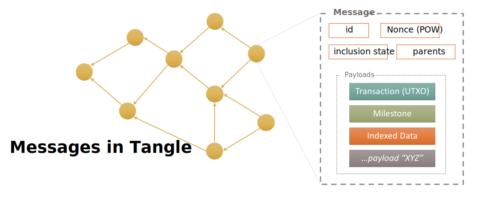

Welcome to IOTA Documentation
Everything you need to know, if you want to work with IOTA. Here you can learn how to setup a Node, learn more about the Tangle or use a library to include IOTA to you project.
The new dawn of Documentation
Chrysalis (IOTA 1.5) is the biggest update to the IOTA Network in History. There ary many improvments and alot of changes to the network, the clients and also for node operators. With the time, the IOTA Founcaiton also did grow on the amount of projects, and we come with a new soultion for docs, insprired by a distributed approach. For the legacy Network (IOTA 1.0), please visit the legacy documentation portal.
Each project has now a own documentation page. On this page, you can discover all our projects and get all updates.
Discover the new project documentation pages:
Networks
Welcome
This page outlines the fundamental changes to the IOTA protocol which will be deployed in 2021 in a release called Chrysalis.

What is Chrysalis
The objective of the IOTA Foundation is to optimize the IOTA mainnet before Coordicide and to offer an enterprise-ready solution for our ecosystem. This will be achieved by an intermediate update called Chrysalis. This post explains what the Chrysalis upgrade entails.
A chrysalis is “the form a caterpillar takes before it emerges from its cocoon as a fully-formed moth or butterfly”. In the context of IOTA, Chrysalis is the mainnet’s intermediate stage before Coordicide is complete. The main purpose of Chrysalis is to improve the usability of the current IOTA mainnet, for users and developers alike.

Why is this process of adopting major protocol improvements relatively unique to IOTA among permissionless DLTs? The simple answer is the absence of miners. In most permissionless DLTs, the miners’ economic incentives differ from those of regular network users. Changes to throughput and network latencies can disrupt the fee market the miners rely on. This in turn makes them likely to object to network upgrades as it affects their bottom line.
In IOTA, validators and users are one and the same. There is no conflict of interests between parties with different motivations, meaning there is a much smoother path to network improvements. This is why we are able to incrementally and smoothly upgrade the network before Coordicide.
What are the specific Chrysalis upgrades?
White-flag approach
 The White-flag approach which is used for calculating balances. It is a simpler, conflict-ignoring approach that improves the speed and efficiency of tip selection, eliminates many network attacks, and significantly reduces the need for reattachments.
The White-flag approach which is used for calculating balances. It is a simpler, conflict-ignoring approach that improves the speed and efficiency of tip selection, eliminates many network attacks, and significantly reduces the need for reattachments.
New milestone selection algorithm
 A new milestone selection algorithm for the coordinator, that focuses on allowing the network to support much more confirmed transactions per second (CTPS) than before with higher computational efficiency.
A new milestone selection algorithm for the coordinator, that focuses on allowing the network to support much more confirmed transactions per second (CTPS) than before with higher computational efficiency.
URTS tip selection
 A new Uniform random tip selection in node software. It is significantly faster and more efficient than the previous tip selection algorithm.
A new Uniform random tip selection in node software. It is significantly faster and more efficient than the previous tip selection algorithm.
Ed25519 signature scheme
 The Ed25519 signature scheme has been added to the network, replacing the current Winternitz one time signature scheme (W-OTS) signature scheme. Using an EdDSA signature scheme allows the protocol and clients using the protocol to run more efficiently on established hardware. Unlike W-OTS, the scheme also allows for the re-use of private keys, and, with that, introduces reusable addresses to the protocol. This change also dramatically reduces the transaction size, saving network bandwidth and processing time.
The Ed25519 signature scheme has been added to the network, replacing the current Winternitz one time signature scheme (W-OTS) signature scheme. Using an EdDSA signature scheme allows the protocol and clients using the protocol to run more efficiently on established hardware. Unlike W-OTS, the scheme also allows for the re-use of private keys, and, with that, introduces reusable addresses to the protocol. This change also dramatically reduces the transaction size, saving network bandwidth and processing time.
Atomic transactions
Atomic transactions that move the protocol from the current, complicated, bundle construct and use simpler atomic transactions instead. This results in much simpler development and more adaptable and maintainable code of the core software. In addition, atomic transactions reduce network overhead, reduce transaction validation and signature verification load, and improve spam protection and congestion control.
Switch to UTXO Model
 A switch to the UTXO model from the current account model. Every coin on an address becomes uniquely identifiable and every spend names the exact coins that it wants to move. This allows for faster and more exact conflict handling and improves resilience and security of the protocol. In addition, switching to UTXO makes other functionalities, such as colored tokens, on the protocol possible in the future.
A switch to the UTXO model from the current account model. Every coin on an address becomes uniquely identifiable and every spend names the exact coins that it wants to move. This allows for faster and more exact conflict handling and improves resilience and security of the protocol. In addition, switching to UTXO makes other functionalities, such as colored tokens, on the protocol possible in the future.
Internal Binary Representation
A switch to an internal binary representation of the trinary transaction. This allows us to work on binary data for validation, IO, and other processing without the current reliance on binary-ternary conversions as in the pre-Chrysalis software node software. The switch to binary transactions further reduces the transaction size, saving network bandwidth and processing time.
New node API and client libraries
With Chrysalis, we wanted to offer a more standard API on both the node and client library level. Node implementations provide a completely redesigned RESTful and eventful API implementations.
Our client libraries provide high level abstractions that allow developers to build solutions that are easier to develop and cheaper to maintain.
Path to Chrysalis
One of the IOTA Foundation’s primary roles is defining and delivering on a development roadmap that aligns with the Foundation's strategy to reach production-readiness and adoption.
The IOTA mainnet has been operational since 2016 and the overall engineering strategy evolved significantly based on industry demand and feedback.
Progress in Coordicide research has resulted in identifying many concepts that could already be implemented on the current IOTA mainnet and provides significant value to users of the protocol before Coordicide. This led to the formalization of our engineering strategy around Chrysalis: a series of upgrades to the protocol that achieves production-readiness before Coordicide.
The benefit of this approach is that many of the protocol properties will remain the same, or almost the same, for Coordicide. That, together with a better set of developer tools, will make the transition to Coordicide much simpler.
The intended outcomes for Chrysalis are:
- Simpler transition to Coordicide - With Coordicide making significant progress, we want to ensure that all developers and companies that build and deploy on Chrysalis will have as smooth a transition to Coordicide as possible.
- Substantial performance improvements - With the changes introduced by Chrysalis, we will see a substantial improvement in the scalability and reliability of the IOTA Mainnet.
- Improved developer and user experience - The new protocol features, new libraries, and the new wallet will make IOTA one of the best platforms to build on, removing the friction which developers experience today while allowing solutions built on top of the protocol to provide better user experience.
- Accelerated adoption - Chrysalis will make IOTA production-ready; becoming a stable protocol, with a reliable set of developer tools and frameworks that will enable startups, corporations, and governments to develop and launch products powered by IOTA.
The stages to Chrysalis

The Chrysalis upgrade is a complex undertaking. We are coordinating a number of distinct products to ensure a smooth transition for IOTA’s current users and partners. In addition to the core node software, we also need to update our wallet software, our libraries, and the entire infrastructure.
Another important requirement is the ease of transition to the future Coordicide network. By carefully planning the breaking changes introduced along the way, and providing support in our developer tools, we will ensure that our growing ecosystem of developers, startups, and corporations can reliably develop and launch new innovative products on IOTA.
The plan for implementing Chrysalis is divided into two phases.
The first phase consisted of improved tip selection (URTS), milestone selection, and White flag. These were implemented in the node software gradually. This phase required an upgrade of all nodes, including the coordinator node, and did not require a snapshot.
The first phase of Chrysalis resulted in:
- Transaction confirmation times of around 10 seconds
- Transactions rarely needing reattachment
- A substantial TPS increase
- Performance and reliability improvements for nodes
The second phase of Chrysalis consists of adopting and/or implementing UTXO, atomic transactions, reusable addresses (Ed25519), a transition to a binary transaction layout, and a new set of client libraries and developer tools. These represent significant changes to the core protocol and the way transactions are structured. Once everything has been tested, validated, and audited, the Foundation will deploy a new Chrysalis network. The upgrade will consist of an extended period when the current, legacy network remains operational. This allows users, exchanges, and partners to migrate to the Chrysalis network at will. The migration is not time constrained.
The second phase of Chrysalis consists of:
- Reusable addresses and support for more standard cryptography (EdDSA), making efficient hardware support for all major architectures possible
- A simplified transaction layout and a reduction in transaction size, further increasing performance and efficiency
- Significant improvements to the usability and reliability of IOTA
- A switch to a UTXO based model from the current account model
The introduction of reusable addresses is an important change for token holders. This will vastly improve IOTA’s usability and make integration into new exchanges, wallets, and payment systems much simpler. A new wallet, called Firefly, will be released with Chrysalis. This wallet will allow token holders to transition from the current WOTS address scheme to the new EdDSA scheme.
Our goal is to make this transition as seamless as possible for everyone in the IOTA ecosystem. This includes a variety of improvements and updates to our libraries and software, as well as training and educational sessions for our partners.
From plan to action
With Chrysalis, we had to make decisions on how to best implement all the upcoming changes, ensuring a correct and timely implementation. What follows is an overview of the various components we are working on to successfully implement this update.
Specification and standardization
Specifications are a major part of our new development process. All our new software projects (Node software, Wallet, Identity, Access, Streams, etc.) are based on vetted specifications. Specifications make it possible for external parties to follow a project’s intended functionality, for example for audit purposes, or develop their own implementations in different languages.
The Chrysalis changes are specified in the form of RFCs. You can find all the RFCs in the protocol-rfcs repository. The list of Chrysalis RFCs includes:
- Improved tip selection (URTS)
- Milestone selection
- White flag
- UTXO
- Ed25519 Signature Scheme
- Reusable addresses (Ed25519)
- Message object
- Binary transaction layout
- Message proof of work
- Dust protection
- New local snapshot file format
- Bech32 address format
- RESTful node API
- Eventful node API
Wallet support
The Trinity wallet is a popular IOTA wallet. With Chrysalis, we will release a new wallet implementation, Firefly. The team has been working on a complete reevaluation of the wallet architecture, with a completely redesigned user experience. At its core will be a new wallet library written in Rust. The wallet library is designed to allow other developers to easily implement IOTA wallets within their applications. Another new Rust library utilized by Firefly is Stronghold; Stronghold enables ultra-secure secret handling and storage.
Infrastructure
Currently, the IOTA Foundation supports two public Networks: Mainnet and Devnet (Devnet is for PoCs and application tests). Both networks provide public endpoints for users and partners. You can read more about the networks and how you can participate in our documentation.
While the current Mainnet will be replaced by a new network, it will remain operational for an extended period of time. For the purposes of non-time-constrained transition of projects deployed on Devnet, the Devnet will only be upgraded after the Chrysalis release.
The Chrysalis testnet has been operational since December and we encourage everyone to use it to build and test their solutions before the official launch of Chrysalis.
Chrysalis Testnet
Nodes deployed to the testnet can be queried using a load balancer at:
- api.lb-0.testnet.chrysalis2.com
We recommend using the load balancer for most scenarios.
Single node endpoints that expose native MQTT in case you need this are:
- api.hornet-0.testnet.chrysalis2.com
- api.hornet-1.testnet.chrysalis2.com
- api.hornet-2.testnet.chrysalis2.com
- api.hornet-3.testnet.chrysalis2.com
Conclusion
Chrysalis is the most promising series of upgrades made to IOTA yet. It is a major step for our production-readiness, with increased transaction throughput, network stability, improved usability, and enables new features and use cases. The upcoming weeks and months are some of the most exciting in IOTA’s history. We are on a clear path towards IOTA’s adoption as an enabling technology for IoT and beyond.
Node software
We have been running the network exclusively on the Go powered Hornet node since the summer of 2020. For Chrysalis, you will have the choice to continue using a new version of Hornet or our new Rust-based Bee node.
Hornet and Bee
Moving forward, both Hornet and Bee are the officially supported nodes for IOTA.
Hornet is an EDF-supported community node written in Go and has already proven itself to be a stable and performant implementation. It recently underwent a successful audit.
Bee is an IOTA Node implemented by the Foundation and written in Rust.
At this stage, we recommend using Hornet since it has several optional features that are not implemented in Bee so far.
Node software
Node API specification
Libraries
The IOTA client libraries allow you to easily integrate IOTA into your own applications. You can choose a library to match your use case.
Official IOTA libraries serve as one-source-code-of-truth to IOTA users and provide binding to other programming languages. You can read more about core principles behind IOTA client libraries in the following blog post.
- client-lib: a general purpose IOTA client library for interacting with IOTA network (Tangle)
- wallet-lib: a stateful library specifically designed to be used for IOTA value-based transfers
- iota.c: a special-purpose library in C for embedded devices (with microcontrollers) covering a basic features of
client-liborwallet-lib - iota.js: an initial IOTA client library in Typescript that can be used in a web browser
- iota.go: an initial IOTA client library in Golang

All libraries are in active development. The libraries target the Chrysalis testnet and do not work with current IOTA mainnet.
The client libraries with official support are maintained by the IOTA Foundation, their source code can be found on the Official GitHub repository.
Utilities
Developer tools
IOTA Client Library
The official client library for interacting with the IOTA Tangle allows you to:
- Create messages and transactions
- Sign transactions
- Generate addresses
- Interact with an IOTA node
If you mainly intend to process value transfers, we recommend you use our stateful wallet library instead.
IOTA Client Library full documentation
Rust
- Getting Started - Getting Started with Rust and the IOTA Client Library.
- Examples - Find starting points or inspiration in the examples.
- Repository - Browse through the code and learn what's happening behind the scenes. Pull requests are very welcome!
- API Documentation - The IOTA Client Library Rust API Documentation.
Node.js
- Getting Started - Getting Started with Node.js and the IOTA Client Library.
- Examples - Find starting points or inspiration in the examples.
- Repository - Browse through the code and learn what's happening behind the scenes. Pull requests are very welcome!
- API Documentation - The IOTA Client Library Node.js API Documentation.
Python
- Getting Started - Getting Started with Python and the IOTA Client Library.
- Examples - Find starting points or inspiration in the examples.
- Repository - Browse through the code and learn what's happening behind the scenes. Pull requests are very welcome!
- API Documentation - The IOTA Client Library Python API Documentation.
C
- Getting Started - Getting Started with C and the IOTA Client Library.
- Examples - Find starting points or inspiration in the examples.
- Repository - Browse through the code and learn what's happening behind the scenes. Pull requests are very welcome!
- API Documentation - The IOTA Client Library C API Documentation.
IOTA Wallet Library
The wallet library is a stateful library for developers; essentially it's a programmable wallet. It is recommended you use this library if you are mainly using IOTA for token transfers. This library supports the handling and monitoring multiple account/addresses at the same time. Its stateful design allows a management of multiple accounts and addresses in an effective manner.
In addition to this, it also supports the Stronghold.rs enclave, incorporating the best security practices in one package:
IOTA Wallet Library full documentation
Rust
- Getting Started - Getting Started with Rust and the IOTA Wallet Library.
- Examples - Find starting points or inspiration in the examples.
- Repository - Browse through the code and learn what's happening behind the scenes. Pull requests are very welcome!
- API Documentation - The IOTA Wallet Library Rust API Documentation.
Node.js
- Getting Started - Getting Started with Node.js and the IOTA Wallet Library.
- Examples - Find starting points or inspiration in the examples.
- Repository - Browse through the code and learn what's happening behind the scenes. Pull requests are very welcome!
- API Documentation - The IOTA Wallet Library Node.js API Documentation.
Python
- Getting Started - Getting Started with Python and the IOTA Wallet Library.
- Examples - Find starting points or inspiration in the examples.
- Repository - Browse through the code and learn what's happening behind the scenes. Pull requests are very welcome!
- API Documentation - The IOTA Wallet Library Python API Documentation.
IOTA Chrysalis Guides
Overall changes from IOTA 1.0 to 1.5 (Chrysalis) in a nutshell
- The format of the address was changed and it is based on both
derivation pathandbech32standards. See IOTA address anatomy - The concepts of
bundlesandtransactionswere replaced with the concepts ofmessagesandpayloads. Themessageis a data structure that is actually being broadcast in the network and represents a node (vertex) in the Tangle graph. See messages, payload and transactions and selected message payloads - The IOTA network is based on a DAG (Directed Acyclic Graph) to store individual
messages(and relatedtransactions). However, eachmessagecan newly reference up to 8 parent messages. See messages, payload and transactions - The signature scheme based on
WOTSwas replaced with withEd25519signature scheme. See seed and addresses - Due to the changed signature scheme, IOTA addresses are reusable without any negative security impact
- In comparison to IOTA 1.0, which was based on ternary, IOTA 1.5 is based on binary and is thus very efficient on all kinds of current hardware devices
- In contrast to IOTA 1.0, IOTA 1.5 addresses are perfectly reusable; even if one spends funds from the given address, it can be used again. See address/key space
- Originally, IOTA 1.0 used an
account-based modelfor tracking individual iota tokens. Chrysalis embracedUnspent Transaction Output(also known asUTXO) model to track tokens and token holders. See Unspent Transaction Output - The approach to client libraries was completely reengineered from the ground up. There are new official client libraries that serve as
one-source-code-of-truthto IOTA users and can be combined in a modular fashion based on particular use cases. All libraries provide a binding to other programming languages. See client libraries - Our official iota tools, such as wallet software, use the same libraries under the hood and so any developer may taste the same dog food as we do
- The official client libraries embraced
Hierarchical Deterministic Walletsapproach which is fullyBIP44compatible. See address/key space - There is a new official wallet software called Firefly. See firefly beta release
Developer guide to Chrysalis
This is a quick guide meant to help you navigate through some of the differences you will encounter while migrating from IOTA 1.0 to IOTA 1.5, also known as Chrysalis.
Seed and addresses
In Chrysalis, all ternary conversions apart from PoW have been removed which results in a better, faster developer experience. Additionally, the WOTS-Signature has been replaced by a Ed25519 signature scheme. This means that you can now use an address multiple times to send and receive coins.
With these changes, and the further adoption of industry standards, both seeds and addresses will look completely different in IOTA Chrysalis.
IOTA 1.0 address:
UDYXTZBE9GZGPM9SSQV9LTZNDLJIZMPUVVXYXFYVBLIEUHLSEWFTKZZLXYRHHWVQV9MNNX9KZC9D9UZWZRGJMIGPDW
IOTA 1.5 (Chrysalis) address (bech32 standard):
Mainnet with iota
iota1qpw6k49dedaxrt854rau02talgfshgt0jlm5w8x9nk5ts6f5x5m759nh2ml
Testnet with atoi
atoi1qpw6k49dedaxrt854rau02talgfshgt0jlm5w8x9nk5ts6f5x5m75zaxtpj
IOTA 1.5 address anatomy
The IOTA address is based on the Ed25519 signature scheme and it is usually represented by the Bech32 (checksummed base32) format string of 64 characters or hex format:
| iota = mainnet; atoi = testnet | |||
More information: Protocol-rfc#0020
Seed
With the new wallet library, developers do not need to use a self-generated seed anymore. By default, the seed is created and stored in Stronghold, our in-house built security enclave. It is not possible to extract the seed from Stronghold for security purposes. Stronghold uses encrypted snapshots that can easily be backed up and securely shared between devices. These snapshots are then further secured with a password.
More information about IOTA Wallet Library is available on Wallet docs page or in the Exchange guide, which is mainly focused on value transactions.
Please note, it is highly recommended to NOT use online seed generators at all. The seed is the only key to the given funds.
A root of the Ed25519 signature scheme is basically a 32-byte (256-bit) uniformly randomly generated seed based on which all private keys and corresponding addresses are generated. A seed may be represented by a string of 64 characters using [0-9a-f] alphabet (32 bytes encoded in hexadecimal).
The seed can be, for example, generated using the SHA256 algorithm on some random input generated by cryptographically secure pseudo-random generator, such as os.urandom().
Seed examples (a single seed per line):
4892e2265c45734d07f220294b1697244a8ab5beb38ba9a7d57aeebf36b6e84a
37c4aab22a5883595dbc77907c1626c1be39d104df39c5d5708423c0286aea89
e94346bce41402155ef120e2525fad2d0bf30b10a89e4b93fd8471df1e6a0981
...
In modern wallet implementations, such as our wallet.rs library and firefly wallet, the seed is usually generated from a
seed mnemonic(seed phrase), using BIP39 standard, to be better memorized/stored by humans. It is based on randomly generated list of english words and is later used to generate the seed. Either way, the seed is a root for all generated private keys and addresses
Address/key space
As mentioned above, IOTA 1.5 embraced some existing industry standards, which is obvious even during an address generation process. This includes the BIP32 standard that describes an approach to Hierarchical Deterministic Wallets. The standard was improved by BIP44 recently.
These standards define a tree structure as a base for address and key space generation which is represented by a derivation path:
m / purpose / coin_type / account / change / address_index
m: a master node (seed)purpose: constant which is {44}coin_type: a constant set for each crypto currency. IOTA = 4218, for instance.account: account index. Zero-based increasingint. This level splits the address/key space into independent branches (ex. user identities) which each has own set of addresses/keyschange: change index which is{0, 1}, also known aswallet chain.
There are two independent chain of addresses/keys.0is reserved for public addresses (for coin receival) and1is reserved for internal (also known as change) addresses to which a transaction change is returned. In comparison to IOTA 1.0, IOTA 1.5 is fine with address reuse, and so it is, technically speaking, valid to return transaction change to the same originating address. It is up to developers whether to leverage it or not.iota.rslibrary and its siblingwallet.rshelp with either scenario.address_index: address index. Zero-based increasingintthat indicates an address index
As outlined, there is a large address/key space that is secured by a single seed.
And there are few additional things to note:
- Each level defines a completely different subtree (subspace) of addresses/keys and those are never mixed up
- The hierarchy is ready to "absorb" addresses/keys for different coins at the same time (
coin_type) and all those coins are secured by the same seed - There may be also other
purposesin the future. However, let's consider a single purpose as of now. The constant44stands for BIP44. - The standard was agreed upon different crypto communities, although not all
derivation pathcomponents are always in active use. For example,accountis not always actively leveraged across crypto space (if this is a case then there is usuallyaccount=0used) - Using different
accountsmay be useful to split addresses/key into some independent spaces and it is up to developers to implement.
Please note, having many different accounts may have a negative impact on performance while account discovery phase. So, if you are after using multiple, different accounts then you may be interested in our stateful library wallet.rs that incorporates all business logic needed to efficiently manage independent accounts. Additionally, our exchange guide provides some useful tips how different accounts may be leveraged.

So in case of IOTA 1.5 (Chrysalis), the derivation path of address/key space is [seed]/44/4218/{int}/{0,1}/{int}:
- The levels
purposeandcoin_typeare given - The rest levels are up to developers to integrate, specifically
seed,account,wallet_chainandaddress_index
Messages, payloads, and transactions
In comparison to original the IOTA 1.0, IOTA 1.5 also introduced some fundamental changes to the underlying data structures. The original concept of transactions and bundles is gone, and has been replaced by a concept of messages and payloads.
A message is a data structure that is actually being broadcast in the IOTA 1.5 network and represents a node (vertex) in the Tangle graph.
It can refer to up to 8 previous messages and once a message is attached to the Tangle and approved by a milestone, the Tangle structure ensures the content of the message is unaltered. Every message is referenced by a message_id which is based on a hash algorithm (Blake2b256) of binary content of the message. It also includes previous Tangle messages as its parents which means it is not possible to alter the given message without altering previous messages in the Tangle.
The message is an atomic unit that is confirmed by the network as a whole.
IOTA is no longer based on ternary. IOTA 1.5 uses binary to encode and broadcast all underlying data entities
A message is arbitrary in size (up to 35 kB) and it can hold variable sets of information called payloads. The number of payloads a single message can encapsulate is not given. Even a message without a payload is completely valid and can be broadcast. The Message itself does not include any timestamp; a message timestamp is derived from an acceptance of the given message by the Tangle network.
Apayload represents a layer of concern. Some payloads may change a state of the ledger (ex. SignedTransactions) and some may provide extra features to some specific applications and business use cases (ex. IndexationPayload).
There are already implemented core payloads, such as SignedTransaction, MilestonePayload, and IndexationPayload but the message and payload definition is generic enough to incorporate any future payload(s) the community agrees upon.
Needless to say, the IOTA network ensures the outer structure of the message itself is valid and strictly complies with network consensus protocol. However, the inner structure is very flexible, future-proof, and offers an unmatched network extensibility.

The current IOTA 1.5 network incorporates the following core payloads:
SignedTransaction: a payload that describesUTXOtransactions that are the cornerstones of value-based transfers in IOTA network. Via this payload, amessagecan be also cryptographically signedMilestonePayload: a payload that is emitted by the CoordinatorIndexationPayload: a payload that enables the addition of an index to the encapsulating message, as well as some arbitrary data. The given index can be later used to search the message(s).
In comparison to IOTA 1.0, a message itself is not directly related to the IOTA address while broadcasting to the IOTA 1.5 network. Such messages are referenced using message_id. Messages are indirectly related to IOTA addresses via SignedTransaction payload, specifically the UTXO section.
Protocol-rfc#0017; Protocol-rfc#0018
Unspent Transaction Output (UTXO)
Originally, IOTA 1.0 used an account-based model for tracking individual iota tokens: each IOTA address held a number of tokens and the aggregated number of tokens from all iota addresses was equal to the total supply.
In contrast, IOTA 1.5 uses the unspent transaction output model, or UTXO. It is based on an idea to track unspent amounts of tokens via a data structure called output.
Below is a simplified analogy of how the UTXO works:
- There are 100 tokens recorded in the ledger as
Output Aand this output belongs to Alice. So, the initial state of the ledger:Output A= 100 tokens - Alice sends 20 tokens to Paul, 30 tokens to Linda, and keeps 50 tokens at her disposal
- Her 100 tokens are recorded as
Output Aso she has to divide (spent) tokens and create three new outputs:Output Bwith 20 tokens that goes to Paul,Output Cwith 30 tokens that goes to Linda, and finallyOutput Dwith the rest of the 50 tokens that she kept for herself - Original
Output Awas completely spent and cannot be used any more. It has been spent and so becomes irrelevant to ledger state. - New state of ledger:
Output B= 20 tokens,Output C= 30 tokens andOutput D= 50 tokens - The total supply remains the same, just number of outputs differs and some outputs were replaced by other outputs in the process

The key takeaway of the outlined process above is the fact that each unique output can be spent only once. Once the given output is spent, it cannot be used any more and is irrelevant in regards to the ledger state.
So even if Alice still wants to keep remaining tokens at her fingertips, those tokens have to be moved to a completely new output that can be, for instance, still tied to the Alice's same iota address as before.
Every output also stores information about an IOTA address to which it is coupled with. So addresses and tokens are indirectly coupled via outputs. Basically, the sum of outputs and their amounts under the given address is a balance of the given address, ie., the number of tokens the given address can spend. And the sum of all unspent outputs and their amounts is equal to the total supply.
Outputs are being broadcasted encapsulated in a message as a part of SignedTransaction payload.
Selected message payloads
Currently, there are two commonly used message payloads, IndexationPayload and SignedTransaction which can be combined based as needed.
IndexationPayload
IndexationPayload is a payload type that can be used to attach an arbitrary data and key index to a message. When this particular payload is leveraged, then a message and related data entity can be searched via key index in addition to a message_id.
SignedTransaction
SignedTransaction is a payload type that is used to transfer value-based messages as UTXO. It changes the ledger state as old outputs are being spent (replaced) and new outputs are being created.
Each SignedTransaction includes the following set of information:
inputs- a list of validoutputsthat should be used to fund the given transaction. Outputs are uniquely referenced via previoustransaction_idand innerindex. At least one output has to be given with enough balance to source alloutputsof the given messageoutputs- a list of IOTA address(es) and related amount(s) the inputoutputsshould be split among. Based on this information, newUTXOoutputs are being createdunlock_blocks- it includes a transaction signature(s) (currently based onEd25519scheme) that proves token ownership based on a valid seed
Dust protection
Since IOTA is feeless and has the ability to send microtransactions, attackers could use this to spam the network with very low value transactions, which we call dust. To avoid this, we only allow microtransaction below 1Mi (dust) of IOTA tokens to another address if you already have at least 1Mi as a dust allowance output on that address. The number of allowed dust outputs on an address is the amount of the dust allowance outputs divided by 100,000 and rounded down, i.e. 10 outputs for each 1 Mi deposited, with a maximum of 100 dust outputs in total.
In the UTXO model, each node in the network needs to keep track of all the currently unspent outputs. When the number of outputs becomes too large, it can cause performance and memory issues. The RFC below proposes a new protocol rule regarding the processing of outputs where they transfer a very small amount of IOTA’s so-called dust outputs. Dust outputs are only allowed when they are backed up by a certain deposit on the receiving address. This limits the amount of dust outputs, thus making it expensive to proliferate dust. Since a receiver must make a deposit, the protocol makes receiving dust an opt-in feature.
Up to 8 Parents
With IOTA 1.0, you always had to reference 2 parent transactions. With Chrysalis, we introduce a more dynamic number of parent nodes where you can reference up to 8 parents. We recommend you reference at least 2 unique parents at all times for the best possible results.
Exchange guide
The IOTA wallet library
Easily integrate IOTA with your exchange, custody solution, or product.
IOTA is built on an architecture that was designed to be the backbone of the Internet of Things (IoT) environment of the future. But this architecture has made it more challenging for service providers like exchanges to integrate IOTA compared to traditional blockchain-based distributed ledgers.
Within the Chrysalis update (also known as IOTA 1.5), some building blocks have been changed to be more approachable and more aligned with currently leveraged standards. We also ship many client libraries to help developers implement IOTA into their applications:

How do I implement it to my exchange?
In wallet.rs, we use an account model so you can create an account for each of your users. Another approach would be to use one account and generate multiple addresses, which you can then link to the users in your database. The wallet library is designed to be as flexible as possible to back up any of your use cases.
Since IOTA addresses in the Chrysalis network are perfectly reusable, they can be mapped to your users in a clear and concise way:
- Create an account for every user ->
Multi Accountapproach - Create one account with many addresses ->
Single accountapproach
The library supports derivation for multiple accounts from a single seed. An account is simply a deterministic identifier from which multiple addresses can be further derived.
The library also allows consumers to assign a meaningful alias to each account. In addition to this, generated individual accounts can be also searched via generated addresses. This means it does not matter whether aliases or addresses are known as the search for the related account is very straightforward using the wallet.rs library.
It also leaves the choice to users if they want to segregate their funds across multiple accounts or multiple addresses. The following illustration outlines the relationships between seed, accounts, and addresses:

Multi account approach
The multi account approach is used to create an account for each individual user. The created accounts can then be linked to the internal user IDs as an account alias, which are distinctly separated.
Single account approach
The single account approach allows for just one account and creates addresses for each individual user. The associated addresses are then linked to the internal user IDs and store who owns which address in the database. Most exchanges are more familiar with the single account approach and find it easier to use, implement, and backup.
Implementation guide
This guide explains how to use the IOTA Wallet Library to successfully implement IOTA into an exchange. If you already implemented the IOTA Hub, please visit the Hub Migration Guide.
Features of the Wallet Library:
- Secure seed management
- Account management (with multiple accounts and multiple addresses)
- Confirmation monitoring
- Deposit address monitoring
- Backup and restore functionality
How does it work?
The Wallet Library is a stateful package with a standardized interface for developers to build applications involving IOTA value transactions. It offers abstractions to handle IOTA payments and can optionally interact with the IOTA Stronghold for seed handling, seed storage, and state backup. Alternatively, you can use a SQLite database; however, using the Stronghold component is highly recommended due to the most advanced level of security being applied.
For reference, you can see the full documentation here.
The following examples cover the multi account approach using NodeJS binding:
- Setup the Wallet Library
- Create an account for each user
- Generate a user address for deposits
- Listen to events
- Check the user balance
- Enable withdrawals
Note: If you are looking for other languages, please read the wallet library overview.
Since all wallet.rs bindings are based on core principles provided by the wallet.rs library, the outlined approach is very similar regardless of the programming language of your choice.
1. Setup the Wallet library
First, let's install the components that are needed to use wallet.rs and the binding of your choice; it may vary a bit from language to language. In the case of the NodeJs binding, it is quite straightforward since it is distributed via the npm package manager. We also recommend you use dotenv for password management.
For reference, read more about backup and security here.
npm install @iota/wallet dotenv
touch .env
Then, input your password to the .env file like this:
SH_PASSWORD="here is your super secure password"
Once you have everything needed to use the wallet.rs library, it is necessary to initialize the AccountManager instance which creates (opens) a secure storage for individual accounts (backed up by Stronghold by default).
The storage is encrypted at rest, so you need a strong password and location where to put your storage.
Note: manage your password with the utmost care.
Technically speaking, "storage" means a single file called wallet.stronghold. It is also needed to generate a seed (mnemonic) that serves as a cryptographic key from which all accounts and related addresses are generated.
One of the key principles behind the stronghold-based storage is that no one can get a seed from the storage. You deal with all the accounts purely via the Account_Manager instance where all complexities are hidden under the hood and are dealt with in a secure way. In case you would also like to store a seed somewhere else, there is another method, AccountManager.generateMnemonic(), that generates random seeds. This method can be leveraged before the actual account initialization.
Note that it is highly recommended to store the stronghold password and the stronghold database on separate devices. Please refer to the backup and security guide for more information.
Import the Wallet Library and create an account manager:
const { AccountManager, SignerType } = require('@iota/wallet')
// Setup IOTA Wallet Library
const manager = new AccountManager({
storagePath: './storage'
})
manager.setStrongholdPassword(process.env.SH_PASSWORD)
manager.storeMnemonic(SignerType.Stronghold, manager.generateMnemonic()) // seed generation
Once the stronghold storage is created, it is not needed to generate the seed any longer (manager.storeMnemonic(SignerType.Stronghold, manager.generateMnemonic())). It has been already saved in the storage together with all account information.
2. Create an account for an user
Once the backend storage is created, individual accounts for individual users can be created:
let account = await manager.createAccount({
alias: user_id, // an unique id from your existing user
clientOptions: { node: 'http://api.lb-0.testnet.chrysalis2.com', localPow: false }
})
Each account is related to a specific IOTA network (mainnet/devnet) which is referenced by a node property, such as node url (in this example, the Chrysalis testnet balancer).
For more information about clientOptions, please refer to Wallet NodeJs API Reference.
The Alias can be whatever fits to the given use case and should be unique. The alias is usually used to identify the given account later on. Each account is also represented by an index which is incremented (by 1) every time a new account is created. Any account can be then referred to via index, alias, or one of its generated addresses.
Once an account has been created, you get an instance of it using the following methods: AccountManager.getAccount(accountId), AccountManager.getAccountByAlias(alias) or AccountManager.getAccounts().
The most common methods of account instance include:
account.alias()- returns an alias of the given accountaccount.listAddresses()- returns list of addresses related to the accountaccount.getUnusedAddress()- returns a first unused addressaccount.generateAddress()- generate a new address for the address index incremented by 1account.balance()- returns the balance for the given accountaccount.sync()- sync the account information with the tangle
3. Generate a user address to deposit funds
Wallet.rs is a stateful library which means it caches all relevant information in storage to provide performance benefits while dealing with, potentially, many accounts/addresses.
Note: sync the account info with the network during the wallet manipulation to be sure the storage reflects an actual state of the ledger (network).
Every account can own multiple addresses. Addresses are represented by an index which is incremented (by 1) every time a new address is created. The latest address is accessible via account.latestAddress():
// Always sync before account interactions
console.log('syncing...')
const synced = await account.sync()
console.log('synced!')
// By design, the last address of each account is an unused address which can be used as deposit address
const latestAddress = account.latestAddress()
console.log('Need a refill? Send it to this address:', latestAddress)
Feel free to fill the address with Testnet Tokens with the IOTA Faucet to test it.
Addresses are of two types, internal and public (external):
- Each set of addresses are independent from each other and has an independent
indexid - Addresses that are created by
account.generateAddress()are indicated asinternal=false(public) - Internal addresses (
internal=true) are calledchangeaddresses and are used to send the excess funds to them - The approach is also known as a BIP32 Hierarchical Deterministic wallet (HD Wallet)
Note: You may remember IOTA 1.0 network in which addresses were not reusable. It is no longer true and addresses can be reused multiple times in IOTA 1.5 (Chrysalis) network.
4. Listen to events
The Wallet.rs library supports several events for listening. As soon as the given event occurs, a provided callback is triggered.
Below is an example of fetching existing accounts and listening to transaction events coming into the account:
const { addEventListener } = require('@iota/wallet')
const callback = function(err, data) {
if(err) console.log("err:", err)
console.log("data:", data)
}
//Adds a new event listener with a callback in the form of (err, data) => {}. Supported event names:
addEventListener("BalanceChange", callback)
// Possible Event Types:
//
// ErrorThrown
// BalanceChange
// NewTransaction
// ConfirmationStateChange
// Reattachment
// Broadcast
Example output:
data: {
accountId: 'wallet-account://1666fc60fc95534090728a345cc5a861301428f68a237bea2b5ba0c844988566',
address: {
address: 'atoi1q9c6r2ek5w2yz54en78m8dxwl4qmwd7gmh9u0krm45p8txxyhtfry6apvwj',
balance: 20000000,
keyIndex: 0,
internal: false,
outputs: [ [Object], [Object] ]
},
balance: 20000000
}
accountId can then be used to identify the given account via AccountManager.getAccount(accountId).
For reference, you can read more about events in the API reference.
5. Check the account balance
Get the available account balance across all addresses of the given account:
// Always sync before account interactions
console.log('syncing...')
const synced = await account.sync()
console.log('synced!')
let balance = account.balance().available
console.log('available balance', balance)
6. Enable withdrawals
Sending tokens is performed via the SyncedAccount instance that is a result of the account.sync() function:
console.log('syncing...')
const synced = await account.sync()
console.log('available balance', account.balance().available)
const address = 'atoi1qykf7rrdjzhgynfkw6z7360avhaaywf5a4vtyvvk6a06gcv5y7sksu7n5cs'
// TODO: Check if address is valid.
const amount = 1000000 // Amount in IOTA: 1000000 == 1 MIOTA
const node_response = await synced.send(
address,
amount
)
console.log("Check your message on https://explorer.iota.org/chrysalis/message/", node_response.id)
The full function signature is SyncedAccount.send(address, amount[, options]).
Default options are perfectly fine and get the job done; however, additional options can be provided, such as remainderValueStrategy:
changeAddress: Send the remainder value to an internal addressreuseAddress: Send the remainder value back to its original address
The SyncedAccount.send() function returns a wallet message that fully describes the given transaction. The messageId can be used later for checking a confirmation status. Individual messages related to the given account can be obtained via account.listMessages() function.
Please note that when sending tokens, a dust protection mechanism should be considered.
IOTA Hub migration guide
This guide will explain how you can switch from IOTA Hub to using wallet.rs or its bindings instead.
Because of the unique features of IOTA 1.0, it was difficult to manage IOTA transactions with just a library. With the new Chrysalis update, the whole protocol was updated to be more accommodating to industry wide standards and developer friendliness.
IOTA Hub will be deprecated with the Chrysalis upgrade and will not work with the new protocol changes. If you still use Hub, we ask you to utilize our new wallet library (iota.rs or bindings) where you can easily manage IOTA addresses, deposits, and withdrawals for user accounts.
To upgrade from Hub to a Chrysalis implementation you need to:
- Integrate the Chrysalis network using wallet.rs as mentioned in the Exchange section
- Pause withdrawals/deposits
- Make sure all balances have been swept and all deposits have been processed
- Transfer all IOTA to a generated migration address (instructions to be provided)
- Once migrated, transfer the IOTA coins to your hot wallet account on your wallet.rs implementation
Backup and security
Security Checklist
- How to backup your account
- How to restore from a backup
- How to export a user's Stronghold
- How to rekey a Stronghold/password rotation
- Do's and don'ts
Security checklist
- I use Stronghold
- I use a strong password (32 character length, Shannon Entropy ~ 4.0) for encrypting the stronghold
- I rotate the stronghold password on a regular basis
- I create a daily backup of the stronghold.snapshot file
- I keep a secure history of passwords used (for recovery)
- I use a secure password management service that integrates with the server
- I use a linux based server (best memory security)
- My server is isolated behind a DMZ
How to backup your account
A simple copy of the stronghold.snapshot file works as a backup (e.g. a daily cronjob rsync/scp with a datetime suffix for example).
How to restore from a backup
Simply place a snapshot file in your directory that wallet.rs expects.
How to export a user's stronghold
You can create a new Stronghold snapshot on the fly to allow a user to leave your service and retain their key.
How to rekey a Stronghold/password rotation
The procedure for changing a Stronghold password is "simple" in that you read a snapshot into a vault and then write it out with a new encryption password. See this code for the source.
Please note: for obvious reasons, old snapshot backups will not be "rekeyed", so you have to track your old passwords.
Do's and don'ts
- Don't use SQLite
- Don't store passwords and backups on the same device
Testnet
IOTA 1.5 (also known as Chrysalis) is IOTA's intermediate stage before Coordicide is complete. You can read more about the strategy for releasing Chrysalis here.
Infrastructure
Nodes deployed to the testnet can be queried using a load balancer at:
- api.lb-0.testnet.chrysalis2.com
We recommend using the load balancer for most scenarios.
Single node endpoints that expose native MQTT, in case you need them, are:
- api.hornet-0.testnet.chrysalis2.com
- api.hornet-1.testnet.chrysalis2.com
- api.hornet-2.testnet.chrysalis2.com
- api.hornet-3.testnet.chrysalis2.com
The Node API is integrated according to the following specification.
Developer tools
IOTA Protocol RFCs
Changes to the IOTA protocol have to go through a proposal process first, where a proposal is posted as a "Request for comment" (RFC). The Chrysalis protocol changes are described in full detail in these RFC's which can be found below:
Resources
Official support
IOTA Explorer
Official Tangle explorer with a lot of tools to browse through the Tangle.
Discord
The official Discord server where community members and the IOTA Foundation discuss projects and related subjects.
IOTA StackExchange
The official forum where you can ask or answer technical questions about IOTA.
Community support
TheTangle.org - IOTA Explorer
A community tool for searching transactions in the Tangle.
TangleExplorer - IOTA Explorer
An community tool for searching transactions in the Tangle.
FAQ
Which libraries are available for Chrysalis?
At this time, there are a handful of libraries available for Chrysalis which are outlined below:
A low level library called iota.rs which is a client library meant to connect to a IOTA node for core interactions with the Tangle. It is written in Rust and there are currently two bindings for Node.js and Python allowing you to use this library from those languages as well.
For value transactions, there is the wallet.rs library which provides a stateful way to manage IOTA coins for one or multiple accounts. It is also written in Rust and there are currently two bindings for Node.js and Python.
Additionally, there is also a native C (iota.c) and an alternative, native javascript (iota.js) client library.
What is Dust protection and how does it work?
Since IOTA is feeless and has the ability to send microtransactions, attackers could use this to spam the network with very low value transactions, which we call dust. To avoid this we only allow microtransaction below 1Mi of IOTA tokens to another address if you already have at least 1Mi on that address.
You can read more about Dust Protection in the RFC here.
What's happening with Coordicide?
This release called Chrysalis still depends on the Coordinator/Compass to run and issue milestones. The next big release after Chrysalis will be Coordicide where we get rid of that dependency. This release is currently in a research/testing phase and will be the main priority after the Chrysalis release.
When is a transaction on the network considered final/irreversible?
Confirmation times on the new network are on average around 10 seconds. Once a transaction is set to confirm it’s final transaction, you don’t have block confirmations like with blockchain.
Hornet or Bee? Which node software should I use?
You can pick either Bee (Rust based) or Hornet (Go based). We currently recommend Hornet since it’s the more complete version of the node software, Bee is still missing some optional features you might wish to use.
Libraries
Welcome
This is the documentation for the official IOTA Client Library. It can be used to easily interact with IOTA network (Tangle) via IOTA node software. Official IOTA libraries serve as one-source-code-of-truth to IOTA users and providing binding to other programming languages. You can read more about core principles behind IOTA client libraries in the following blog post.
Example of tasks that iota.rs is able to help with:
- Create messages and transactions
- Sign transactions
- Generate addresses
- Interact with an IOTA node
Please note: there is also available
wallet.rslibrary that contains all the logic to safely build wallets or integrations that require value-based IOTA transfers. We strongly recommend to leverage wallet.rs library in case one is more focused on IOTA value-based transfers since it integrates the best security practices including our stronghold enclave`.
IOTA 1.5 (Chrysalis) in a nutshell
- IOTA network uses a DAG (Directed Acyclic Graph) to store its transactions. Each transaction can reference up to 8 parent transactions
- There is a breaking change moving from IOTA 1.0 to IOTA 1.5 (Chrysalis). IOTA address was originally based on WOTS signature scheme (81 trytes) and it has been replaced by a Ed25519 signature scheme
- In contrast to IOTA 1.0, IOTA 1.5 addresses are perfectly reusable: so even if one spent funds from the given address it can be used again
- There are new client libraries developed in rust, specifically
iota.rs,wallet.rsandstronghold.rsthat serve asone-source-code-of-truthto IOTA users and providing binding to other programming languages
IOTA 1.5 address anatomy
IOTA address is based on Ed25519 signature scheme and it is usually represented by Bech32 (checksummed base32) format string of 64 characters:
| iota = mainnet; atoi = testnet | |||
More details: RFC: Bech32 Address Format
Warning
This library is in active development. The library targets the Chrysalis testnet and does not work with current IOTA mainnet.
Testnet
To join the Chrysalis public testnet checkout this link. More information about Chrysalis components is available at documentation portal.
Joining the discussion
If you want to get involved in discussions about this library, or you're looking for support, go to the #clients-discussion channel on Discord.
What you will find here
This documentation has five paths.
- The Overview, an detailed overview of the client library.
- Libraries bindings, all avaiable programming languages and their resources.
- The Specification, detailed explaination requirements and functionality.
- Contribute, how you can work on the client software.
- Get in touch, join the community and become part of the X-Team!
Overview
The IOTA client library is a stateless library that provides a high level abstractions on top of IOTA node software to help interact with IOTA network in user friendly way and allows you to do the following, for instance:
- Create messages and transactions
- Sign transactions
- Generate addresses
- Interact with an IOTA node
IOTA client library in a nutshell
The library provides two types of API calls under a common interface:
Full node API calls: those calls are basically translated to native node rest api calls. For more information, please see node rest API referenceGeneral high level API calls: those are convenience functions with some typical default parameters in order to use them in a straightforward manner. They typically implement several recommended steps for the given task. Implementation details are part of the full specification
See the full specification here.
High level layered overview:

IOTA Client libraries
There are currently available the following official bindings to iota.rs:
Getting Started
It is a recommended approach to start your interactions with IOTA on a testnet network. API load balancer: https://api.lb-0.testnet.chrysalis2.com:443
Network explorer is available at IOTA Tangle Explorer.
In order to properly test value-based transactions on testnet network, you are going to need some tokens! You can get some testnet tokens using the faucet. However, we strongly recommend to leverage official wallet.rs library in case of value-based IOTA transfers.
IOTA Client Rust Library

Warning
This library is in active development. The library targets the Chrysalis testnet and does not work with current IOTA mainnet.
Joining the discussion
If you want to get involved in discussions about this library, or you're looking for support, go to the #clients-discussion channel on Discord.
Overview
Getting Started with Rust
Requirements
To use the library, we recommend you update Rust to latest stable version $ rustup update stable. Nightly should be fine but some changes might not be compatible.
no_std is not currently supported, but we are working on it in bee, and will provide it as feature once the new implementation is ready.
Using the library
Using the library is easy, just add it as dependency in your Cargo.toml:
[dependencies]
iota-core = { git = "https://github.com/iotaledger/iota.rs", branch = "dev" }
And then you can use the library in your code with use iota;.
Initialisation
This example fetches node information
use iota::Client; #[tokio::main] async fn main() { let iota = Client::builder() // Crate a client instance builder .with_node("https://api.lb-0.testnet.chrysalis2.com") .unwrap() .finish() .await .unwrap(); let info = iota.get_info().await.unwrap(); println!("Nodeinfo: {:?}", info); }
Examples
You can see the examples in the examples directory and try them with:
cargo run --example # lists the available examples
cargo run --example address # execute the `address` example
API Reference
API reference
You can read the API reference here, or generate it yourself.
If you'd like to explore the implementation in more depth, the following command generates docs for the whole crate, including private modules:
cargo doc --document-private-items --no-deps --open
Troubleshooting
StackExchange
The IOTA StackExchange a a nice tool for developers to find answers for a problem. Just search your problem and find your answer! If there is no one, submit your question and share it in the discussion channel below.
Joining the discussion
If you want to get involved in discussions about this library, or you're looking for support, go to the #clients-discussion channel on Discord.
IOTA Client Node.js Library

Warning
This library is in active development. The library targets the Chrysalis testnet and does not work with current IOTA mainnet.
Joining the discussion
If you want to get involved in discussions about this library, or you're looking for support, go to the #clients-discussion channel on Discord.
Overview
Getting Started with Node.js
Installation
- Using NPM:
$ npm i @iota/client
- Using yarn:
$ yarn add @iota/client
Example
const { ClientBuilder } = require('@iota/client')
const client = new ClientBuilder()
.node('https://api.lb-0.testnet.chrysalis2.com')
.build()
client.getInfo().then(console.log).catch(console.error)
Examples
You can look into the tests until the full documentation is available.
API Reference
Connecting to a MQTT broker using raw ip doesn't work. This is a limitation of rustls.
API Reference
ClientBuilder
node(url): ClientBuilder
Adds an IOTA node to the client pool.
| Param | Type | Description |
|---|---|---|
| url | string | A node URL |
Returns the client builder instance for chained calls.
nodeAuth(url, name, password): ClientBuilder
Adds an IOTA node with basic authentication to the client pool.
| Param | Type | Description |
|---|---|---|
| url | string | A node URL |
| name | string | A name |
| password | string | A password |
Returns the client builder instance for chained calls.
nodes(urls): ClientBuilder
Adds a list of IOTA nodes to the client pool.
| Param | Type | Description |
|---|---|---|
| url | string[] | An array of node URLs |
Returns the client builder instance for chained calls.
nodePoolUrls(urls): ClientBuilder
Adds a list of IOTA nodes from node pool URLs to the client pool.
| Param | Type | Description |
|---|---|---|
| url | string[] | An array of node pool URLs |
Returns the client builder instance for chained calls.
network(networkName): ClientBuilder
Set a network to get default nodes for it. Can be "testnet" or "mainnet". Nodes that don't belong to this network are ignored.
| Param | Type | Description |
|---|---|---|
| networkName | string | The network |
Returns the client builder instance for chained calls.
quorumSize(size): ClientBuilder
Defines how many of nodes will be queried at the same time to check for quorum.
| Param | Type | Description |
|---|---|---|
| size | number | The number of nodes that will be queried |
Returns the client builder instance for chained calls.
quorumThreshold(threshold): ClientBuilder
Defines the minimum amount of nodes from the quorum pool that need to agree if we want to consider the result true.
| Param | Type | Description |
|---|---|---|
| threshold | number | Minimum amount of nodes |
Returns the client builder instance for chained calls.
brokerOptions(options): ClientBuilder
Sets the options for the MQTT connection with the node.
| Param | Type | Description |
|---|---|---|
| options | BrokerOptions | The MQTT broker options |
Returns the client builder instance for chained calls.
nodeSyncInterval(interval): ClientBuilder
Sets the node syncing interval.
| Param | Type | Description |
|---|---|---|
| interval | number | The interval for the node syncing process |
Returns the client builder instance for chained calls.
disableNodeSync(): ClientBuilder
Disables the node syncing process. Every node will be considered healthy and ready to use.
Returns the client builder instance for chained calls.
defaultTimeout(timeoutMs): ClientBuilder
Sets the default HTTP request timeout.
| Param | Type | Description |
|---|---|---|
| timeout | number | The timeout in milliseconds |
Returns the client builder instance for chained calls.
apiTimeout(api, timeoutMs): ClientBuilder
Sets the HTTP request timeout for the specified API.
| Param | Type | Description |
|---|---|---|
| api | 'GetHealth' | 'GetInfo' | 'GetTips' | 'PostMessage' | 'GetOutput' | 'GetMilestone' | The API to set the request timeout |
| timeout | number | The timeout in milliseconds |
Returns the client builder instance for chained calls.
localPow(local): ClientBuilder
Sets the PoW type.
| Param | Type | Description |
|---|---|---|
| local | boolean | Flag determining if PoW should be done locally or remotely |
Returns the client builder instance for chained calls.
build(): Client
Builds the client instance.
Returns a Client instance.
Client
networkInfo(): NetworkInfo
Gets the cached network info.
Returns a NetworkInfo instance.
subscriber(): TopicSubscriber
Gets a handle to the MQTT topic subscriber.
Returns a TopicSubscriber instance.
message(): MessageSender
Initiates the builder to send messages.
Returns a MessageSender instance.
getUnspentAddress(seed): UnspentAddressGetter
Get a valid unspent address.
| Param | Type | Description |
|---|---|---|
| seed | string | The hex-encoded seed to search |
Returns a UnspentAddressGetter instance.
getAddresses(seed): AddressGetter
Find addresses from the seed regardless of their validity.
| Param | Type | Description |
|---|---|---|
| seed | string | The hex-encoded seed to search |
Returns a AddressGetter instance.
findMessages(indexationKeys, messageIds): Promise<Message[]>
Finds all messages associated with the given indexation keys and message ids.
| Param | Type | Description |
|---|---|---|
| indexationKeys | string[] | The list of indexations keys too search |
| messageIds | string[] | The list of message ids to search |
Returns a promise resolving to the list of the found messages.
getBalance(seed: string): BalanceGetter
Get balance on a given seed and its wallet account index.
| Param | Type | Description |
|---|---|---|
| seed | string | The hex-encoded seed to search |
Returns a BalanceGetter instance.
getAddressBalances(addresses): Promise<AddressBalance[]>
Get the balance in iotas for the given addresses.
| Param | Type | Description |
|---|---|---|
| addresses | string[] | The list of addresses to search |
Returns A promise resolving to the list of { address, balance } pairs.
bech32ToHex(bech32)
Returns a parsed hex String from bech32.
| Param | Type | Description |
|---|---|---|
| bech32 | string | The address Bech32 string |
Returns A String
hexToBech32(hex, bech32_hrp (optional))
Returns a parsed bech32 String from hex.
| Param | Type | Description |
|---|---|---|
| bech32 | string | The address Bech32 string |
| bech32_hrp | string | The Bech32 hrp string |
Returns A String
isAddressValid(address: string): boolean
Checks if a given address is valid.
| Param | Type | Description |
|---|---|---|
| address | string | The address Bech32 string |
Returns A boolean.
retry(messageId: string): Promise
Retries (promotes or reattaches) the message associated with the given id.
| Param | Type | Description |
|---|---|---|
| messageId | string | The id of the message to retry |
Returns A promise resolving to the new Message instance.
retryUntilIncluded(messageId: string[, interval: int, max_attempts: int]): Promise
Retries (promotes or reattaches) the message associated with the given id until it's included in the Tangle. Default interval is 5 seconds and max_attempts is 10.
| Param | Type | Description |
|---|---|---|
| messageId | string | The id of the message to retry |
| [options.interval] | int | The interval in seconds in which we retry the message. |
| [options.max_attempts] | int | The maximum of attempts we retry the message. |
Returns the message ids and Message of reattached messages.
getInfo(): Promise
Gets information about the node.
Returns a promise resolving to the NodeInfo object.
getTips(): Promise<[string, string]>
Gets two non-lazy tips.
Returns a promise resolving to an array of length 2 containing the message ids of the tips.
postMessage(message): Promise
Submits a message.
| Param | Type | Description |
|---|---|---|
| message | MessageDto | The message to submit |
Returns the message identifier.
getMessage(): MessageFinder
Gets a message from its identifier.
Returns an instance of the MessageFinder for choices of response.
getOutput(outputId): Promise
Gets the UTXO outputs associated with the given output id.
| Param | Type | Description |
|---|---|---|
| outputId | string | The id of the output to search |
Returns a promise resolving to the associated OutputMetadata.
findOutputs(outputIds, addresses): Promise<OutputMetadata[]>
Gets the UTXO outputs associated with the given output ids and addresses.
| Param | Type | Description |
|---|---|---|
| addresses | string[] | The list of addresses to search |
| outputIds | string[] | The list of output ids to search |
Returns a promise resolving to a list of OutputMetadata.
getAddressOutputs(address[, options]): Promise<string[]>
Gets the UTXO outputs associated with the given address.
| Param | Type | Description |
|---|---|---|
| address | string | The address Bech32 string |
| [options.includeSpent] | boolean | Whether the query should include spent outputs or not |
| [options.outputType] | 'SignatureLockedSingle' | 'SignatureLockedDustAllowance' | The output type filter |
Returns a promise resolving to a list of output ids.
getAddressBalance(address): Promise
Gets the balance of the given address.
| Param | Type | Description |
|---|---|---|
| address | string | The address Bech32 string |
getMilestone(index): Promise
Gets the milestone by the given index.
| Param | Type | Description |
|---|---|---|
| index | number | The index of the milestone |
Returns a promise resolving to the MilestoneMetadata.
getMilestoneUtxoChanges(index): Promise
Gets the utxo changes by the given milestone index.
| Param | Type | Description |
|---|---|---|
| index | number | The index of the milestone |
Returns a promise resolving to the MilestoneUTXOChanges.
getReceipts(): Promise<Receipts[]>
Get all receipts.
Returns a promise resolving to the Receipts.
getReceiptsMigratedAt(index): Promise<Receipts[]>
Get all receipts for a given milestone index
| Param | Type | Description |
|---|---|---|
| index | number | The index of the milestone |
Returns a promise resolving to the Receipts.
getTreasury(): Promise
Get the treasury amount.
Returns a promise resolving to the Treasury.
getIncludedMessage(): Promise
Get the included message of a transaction.
| Param | Type | Description |
|---|---|---|
| index | string | The id of the transaction |
Returns A promise resolving to the new Message instance.
reattach(messageId): Promise
Reattaches the message associated with the given id.
| Param | Type | Description |
|---|---|---|
| messageId | string | The id of the message to reattach |
Returns A promise resolving to the new Message instance.
promote(messageId): Promise
Promotes the message associated with the given id.
| Param | Type | Description |
|---|---|---|
| messageId | string | The id of the message to promote |
Returns A promise resolving to the new Message instance.
NetworkInfo
| Field | Type | Description |
|---|---|---|
| network | string | The network |
| networkId | number | The network hashed |
| bech32HRP | string | Bech32 HRP for this network |
| minPowScore | number | The network's minimum score for PoW |
| localPow | boolean | Whether we are using local PoW or not |
TopicSubscriber
topic(topic): TopicSubscriber
Adds a topic to this manager instance.
| Param | Type | Description |
|---|---|---|
| topic | string | A MQTT topic |
Returns the topic subscriber instance for chained calls.
topics(topic): TopicSubscriber
Adds a list of topics to this manager instance.
| Param | Type | Description |
|---|---|---|
| topics | string[] | An array of MQTT topics |
Returns the topic subscriber instance for chained calls.
subscribe(cb): TopicSubscriber
Subscribe to the provided topics.
| Param | Type | Description |
|---|---|---|
| cb | function | The topic handler callback in the form of (err, message) => {} |
Returns the topic subscriber instance for chained calls.
unsubscribe(cb: Callback): TopicSubscriber
Unsubscribes from the provided topics.
| Param | Type | Description |
|---|---|---|
| cb | function | A callback executed when the unsubscribe is finished in the form of (err, message) => {} |
Returns the topic subscriber instance for chained calls.
MessageSender
Builder to create and submit messages to the Tangle.
index(index): MessageSender
Sets the message indexation. This field is required for indexation payloads.
| Param | Type | Description |
|---|---|---|
| index | string | The indexation |
Returns the message submit instance for chained calls.
seed(seed): MessageSender
Sets the transaction account seed. This field is required for transaction payloads.
| Param | Type | Description |
|---|---|---|
| seed | string | The hex-encoded seed of the account to spend |
Returns the message submit instance for chained calls.
data(data): MessageSender
Sets the indexation data.
| Param | Type | Description |
|---|---|---|
| data | Uint8Array | The message's data |
Returns the message submit instance for chained calls.
parents(messageId): MessageSender
Sets 1-8 custom parent message ids.
| Param | Type | Description |
|---|---|---|
| messageId | string[] | The parents message ids |
Returns the message submit instance for chained calls.
accountIndex(index): MessageSender
Sets the account index. This field is required for transactions.
| Param | Type | Description |
|---|---|---|
| index | number | The account index |
Returns the message submit instance for chained calls.
input(transactionId, index): MessageSender
Adds an output to the transaction.
| Param | Type | Description |
|---|---|---|
| transactionId | string | The transaction id |
| index | number | The input index |
Returns the message submit instance for chained calls.
inputRange(start, end): MessageSender
Defines the range in which to search for addresses fro custom inputs.
| Param | Type | Description |
|---|---|---|
| start | number | The start index |
| end | number | The end index |
Returns the message submit instance for chained calls.
output(address, amount): MessageSender
Adds an output to the transaction.
| Param | Type | Description |
|---|---|---|
| address | string | The output address |
| amount | number | The output amount |
Returns the message submit instance for chained calls.
dustAllowanceOutput(address, amount): MessageSender
Adds a dust allowance output to the transaction.
| Param | Type | Description |
|---|---|---|
| address | string | The output address |
| amount | number | The output amount |
Returns the message submit instance for chained calls.
initialAddressIndex(index): MessageSender
Sets the initial address index to search for balance. Defaults to 0 if the function isn't called.
| Param | Type | Description |
|---|---|---|
| index | number | The initial address index |
Returns the message submit instance for chained calls.
submit(): Promise
Submits the message.
Returns a promise resolving to the message identifier.
UnspentAddressGetter
Gets a valid unspent address associated with the seed.
accountIndex(index): UnspentAddressGetter
Sets the account index. This field is required.
| Param | Type | Description |
|---|---|---|
| index | number | The account index |
Returns the address getter instance for chained calls.
initialAddressIndex(index): UnspentAddressGetter
Sets the initial address index. Defaults to 0 if the function isn't called.
| Param | Type | Description |
|---|---|---|
| index | number | The initial address index |
Returns the address getter instance for chained calls.
get(): Promise<[Address, number]>
Performs the operation.
Returns a promise resolving to the Address instance and its index.
AddressGetter
Generates addresses with a given seed.
accountIndex(index): AddressGetter
Sets the account index. This field is required.
| Param | Type | Description |
|---|---|---|
| index | number | The account index |
Returns the address finder instance for chained calls.
range(start, end): AddressGetter
Defines the range of addresses to get. Defaults to 0..20 if the function isn't called.
| Param | Type | Description |
|---|---|---|
| start | number | The first address index |
| end | number | The last address index |
Returns the address finder instance for chained calls.
get(): Address[]
Performs the operation.
Returns an array of Address instances.
BalanceGetter
Gets balance on a given seed.
accountIndex(index): BalanceGetter
Sets the account index. This field is required.
| Param | Type | Description |
|---|---|---|
| index | number | The account index |
Returns the balance getter instance for chained calls.
initialAddressIndex(index): BalanceGetter
Sets the initial address index. Defaults to 0 if the function isn't called.
| Param | Type | Description |
|---|---|---|
| index | number | The initial address index |
Returns the balance getter instance for chained calls.
gapLimit(amount): BalanceGetter
Sets the gapLimit to specify how many addresses will be checked each round. If gap_limit amount of addresses in a row have no balance the BalanceGetter will return. Defaults to 20 if the function isn't called.
| Param | Type | Description |
|---|---|---|
| gap_limit | number | The initial address index |
Returns the balance getter instance for chained calls.
get(): Promise
Performs the operation.
Returns a promise resolving to the account balance.
MessageFinder
Gets a message by indexation key or identifier.
initialAddressIndex(index): Promise<string[]>
| Param | Type | Description |
|---|---|---|
| index | string | The indexation key |
Gets a list of message identifiers associated with the given indexation key.
Returns a promise resolving to the list of associated ids.
data(id): Promise
Gets the message object associated with the given identifier.
| Param | Type | Description |
|---|---|---|
| id | string | The message identifier |
Returns a Message object.
raw(id): Promise
Gets the message raw data.
| Param | Type | Description |
|---|---|---|
| id | string | The message identifier |
Returns the message raw data as string.
children(id): Promise<string[]>
Gets the children of the given message.
| Param | Type | Description |
|---|---|---|
| id | string | The message identifier |
Returns the list of message ids of the message children.
metadata(id): Promise
Gets the metadata of the given message.
| Param | Type | Description |
|---|---|---|
| id | string | The message identifier |
Returns a MessageMetadata object.
BrokerOptions
| Field | Type | Description |
|---|---|---|
| automaticDisconnect | number | Whether the MQTT broker should be automatically disconnected when all topics are unsubscribed or not. |
| timeout | number | MQTT connection timeout in secods |
Address
| Field | Type | Description |
|---|---|---|
| type | 'Ed25519' | Address type |
| data | string | Address as a Bech32 string |
Message
| Field | Type | Description |
|---|---|---|
| networkId | number | Network identifier |
| parents | string[] | Message ids of the message references |
| payload | Payload | Message payload |
| nonce | number | Message nonce |
Payload
| Field | Type | Description |
|---|---|---|
| data | { type: 'Transaction', data: TransactionPayload } | { type: 'Indexation', data: IndexationPayload } | { type: 'Milestone', data: MilestonePayload} | Payload data |
TransactionPayload
| Field | Type | Description |
|---|---|---|
| essence | TransactionPayloadEssence | Transaction essence |
| unlock_blocks | UnlockBlock[] | Unlock blocks |
- TransactionPayloadEssence
| Field | Type | Description |
|---|---|---|
| inputs | Input[] | Inputs |
| outputs | Output[] | Outputs |
| payload | Payload | undefined | Payload for chaining |
- Input
| Field | Type | Description |
|---|---|---|
| type | 'UTXO' | Input type identifier |
| data | string | The associated output id |
- Output
| Field | Type | Description |
|---|---|---|
| type | 'SignatureLockedSingle' | Output type identifier |
| data | { address: string, amount: number } | The output definition |
- UnlockBlock
| Field | Type | Description |
|---|---|---|
| type | 'Signature' | 'Reference' | Unlock block type identifier |
| data | Ed25519SignatureUnlockBlock | number | Unlock block data (signature type or reference index) |
- Ed25519SignatureUnlockBlock
| Field | Type | Description |
|---|---|---|
| public_key | number[] | Ed25519 public key |
| signature | number[] | Ed25519 signature |
IndexationPayload
| Field | Type | Description |
|---|---|---|
| index | string | Indexation key |
| data | number[] | Indexation data as byte array |
MilestonePayload
| Field | Type | Description |
|---|---|---|
| essence | MilestoneEssence | Milestone essence |
| signatures | number[][] | Milestone signatures |
- MilestoneEssence
| Field | Type | Description |
|---|---|---|
| index | number | Milestone index |
| timestamp | number | Timestamp |
| parents | string[] | Message ids of the messages the milestone references |
| merkle_proof | number[] | Merkle proof |
| next_pow_score | number | Next PoW score |
| next_pow_score_milestone_index | number | Milestone index at which the next_pow_score will be used |
| public_keys | number[][] | public keys |
MessageDto
| Field | Type | Description |
|---|---|---|
| parents | string[] | undefined | Message ids of the messages it references. getTips is used by default |
| payload | PayloadDto | Message payload |
PayloadDto
| Field | Type | Description |
|---|---|---|
| data | TransactionPayloadDto | IndexationPayloadDto | Payload data |
TransactionPayloadDto
| Field | Type | Description |
|---|---|---|
| essence | TransactionPayloadEssenceDto | Transaction essence |
| unlockBlocks | UnlockBlockDto[] | Unlock blocks |
- TransactionPayloadEssenceDto
| Field | Type | Description |
|---|---|---|
| inputs | string[] | Inputs |
| outputs | Output[] | Outputs |
| payload | PayloadDto | undefined | Payload for chaining |
- OutputDto
| Field | Type | Description |
|---|---|---|
| address | string | Output address |
| amount | amount | Output amount |
- UnlockBlockDto
| Field | Type | Description |
|---|---|---|
| data | Ed25519SignatureUnlockBlockDto | number | Unlock block data (signature type or reference index) |
- Ed25519SignatureUnlockBlockDto
| Field | Type | Description |
|---|---|---|
| publicKey | number[] | Ed25519 public key |
| signature | number[] | Ed25519 signature |
IndexationPayloadDto
| Field | Type | Description |
|---|---|---|
| index | string | Indexation key |
| data | Uint8Array | Indexation data |
MessageMetadata
| Field | Type | Description |
|---|---|---|
| messageId | string | Message identifier |
| parents | string[] | Message id of the messages it references |
| isSolid | boolean | Message solid state |
| shouldPromote | boolean | undefined | Indicates whether the message should be promoted or not |
| shouldReattach | boolean | undefined | Indicates whether the message should be reattached or not |
| referencedByMilestoneIndex | number | undefined | Index of the milestone that references this message |
| ledgerInclusionState | string | undefined | Ledger inclusion state |
NodeInfo
| Field | Type | Description |
|---|---|---|
| name | string | Node name |
| version | string | Node version |
| isHealthy | boolean | Node health status |
| networkId | string | Node network identifier |
| bech32HRP | string | Bech32 HRP for this network |
| min_pow_score | number | Min PoW score |
| messages_per_second | number | Network stats: Messages per second in the network |
| referenced_messages_per_second | number | Network stats: Referenced messages per second |
| referenced_rate | number | Network stats: referenced rate |
| latest_milestone_timestamp | number | Timestamp of the latest milestone |
| latestMilestoneIndex | number | Index of the latest milestone |
| confirmedMilestoneIndex | number | Index of the confirmed milestone |
| pruningIndex | number | Pruning index |
| features | string[] | List of node features |
OutputMetadata
| Field | Type | Description |
|---|---|---|
| messageId | string | Id of the message associated with the output |
| transactionId | string | Id of the transaction associated with the output |
| outputIndex | number | Output index |
| isSpent | boolean | Output spent state |
| address | string | Output address |
| amount | number | Output amount |
MilestoneMetadata
| Field | Type | Description |
|---|---|---|
| milestoneIndex | number | Milestone index |
| messageId | string | Id of the message associated with the milestone |
| timestamp | number | Milestone timestamp |
MilestoneUTXOChanges
| Field | Type | Description |
|---|---|---|
| index | number | Milestone index |
| createdOutputs | string[] | OutputIds from new created outputs |
| consumedOutputs | string[] | OutputIds from consumed outputs |
Receipts
| Field | Type | Description |
|---|---|---|
| receipt | receipt | Receipt |
| milestone_index | number | Milestone index |
Treasury
| Field | Type | Description |
|---|---|---|
| milestone_id | string | Milestone id |
| amount | number | Amount |
Troubleshooting
StackExchange
The IOTA StackExchange a a nice tool for developers to find answers for a problem. Just search your problem and find your answer! If there is no one, submit your question and share it in the discussion channel below.
Joining the discussion
If you want to get involved in discussions about this library, or you're looking for support, go to the #clients-discussion channel on Discord.
IOTA Client Python Library

Warning
This library is in active development. The library targets the Chrysalis testnet and does not work with current IOTA mainnet.
Joining the discussion
If you want to get involved in discussions about this library, or you're looking for support, go to the #clients-discussion channel on Discord.
Overview
Getting Started with IOTA Client Python binding
Installation
Easiest way how to get python binding up and running is to leverage pre-built python libraries for linux/macos/windows that can be installed to your python environment (3.6+) via pip. The binding is automagically generated using github actions.
The latest artifacts for major python versions can be also grabbed using nighly.link service. Download zip file for the given os and pyversion, unpack wheel file (.whl) and install it via pip:
pip install <wheel_file>
Once it has been properly installed you can double check it using pip:
pip list
You should see the similar output:
Package Version
-------------------------- -------
iota-core-python 0.2.0a3
Once installed in the given python environment you are all set and can start hacking using python binding!
Usage
import iota_client
print(iota_client.__doc__)
print(dir(iota_client))
Examples
Please note: It is not recommended to store passwords/seeds on host's environment variables or in the source code in a production setup! Please make sure you follow our backup and security recommendations for production use!
Connecting to node(s)
All features of iota.rs library are accessible via an instance of Client class that provides high-level abstraction to all interactions over IOTA network (Tangle). This class has to be instantiated before starting any interactions with the library, or more precisely with IOTA nodes that power IOTA network.
You may be familiar with a fact that in case of IOTA 1.0 network one had to know an address of IOTA node to start participating to the network. It is no longer needed in IOTA 1.5 (Chrysalis) world. The library is designed to automatically choose a starting IOTA node based on the network type one would like to participate in: testnet or mainnet.
So very simplistic example how to connect to IOTA testnet is the following one:
import iota_client
# client will connect to testnet by default
client = iota_client.Client()
print(client.get_info())
Output example of get_info() function of the Client instance:
{
'name': 'HORNET',
'version': '0.6.0-alpha',
'is_healthy': True,
'network_id': 'testnet6',
'bech32_hrp': 'atoi',
'latest_milestone_index': 192448,
'confirmed_milestone_index': 192448,
'pruning_index': 174931,
'features': ['PoW'],
'min_pow_score': 4000.0
}
The most important properties:
is_healthy: indicates whether the given node is in sync with the network and so it is safe to use it. Even if a node is up and running it may not be fully prepared to process your API calls properly. The node should be "synced", meaning should be aware of all TXs in the Tangle. It is better to avoid not fully synced nodes. A node healthiness can be alternatively obtained also with a methodClient.get_health()bech32_hrp: it indicates whether the given node is a part of testnet (atoi) or mainnet (iota). See more info regarding IOTA address format
Please note, when using node load balancers then mentioned health check may be quite useless since follow-up API calls may be served by different node behind the load balancer that may have not been actually checked. One should be aware of this fact and trust the given load balancer participates only with nodes that are in healthy state. iota.rs library additionally supports a management of internal node pool and so load-balancer-like behavior can be mimicked using this feature locally.
Needless to say, the Client class constructor provides several parameters via which the process can be closely managed.
The most common ones:
network: can beTestnetorMainnet. It instructs the library whether to automatically select testnet nodes or mainnet nodesnode: specify address of actual running IOTA node that should be used to communicate with (in formathttps://node:port), for ex: https://api.lb-0.testnet.chrysalis2.com:443node_pool_urls: library also supports a management of pool of nodes. You can provide a list of nodes and library manages access to them automatically (selecting them based on their sync status)local_pow:local_pow==True(by default) means aProof-of-workis done locally and not remotelynode_sync_disabled:node_sync_disabled==False(by default) means that library checks for sync status of node(s) periodically before its use.node_sync_disabled==Truemeans library also uses nodes that are not in sync with network. This parameter is usually useful if one would like to interact with local test node that is not fully synced. This parameter should not be used in production
If node_pool_urls is provided then the library periodically checks in some interval (argument node_sync_interval) whether node is in sync or not.
Generating seed and addresses
Since the IOTA network is permission-less type of network, anybody is able to use it and interact with it. No central authority is required at any stage. So anybody is able to generate own seed and then deterministically generate respective private keys/addresses.
Please note, it is highly recommended to NOT use online seed generators at all. The seed is the only key to the given addresses. Anyone who owns the seed owns also all funds related to respective IOTA addresses (all of them).
We strongly recommend to use official
wallet.rslibrary together withstronghold.rsenclave for value-based transfers. This combination incorporates the best security practices while dealing with seeds, related addresses andUTXO. See more information on Chrysalis docs.
IOTA 1.5 (Chrysalis) uses Ed25519 signature scheme and address is usually represented by Bech32 (checksummed base32) format string of 64 characters.
A root of Ed25519 signature scheme is basically a 32-byte (256-bit) uniformly randomly generated seed based on which all private keys and corresponding addresses are generated. In the examples below, the seed is represented by a string of 64 characters using [0-9a-f] alphabet (32 bytes encoded in hexadecimal).
Seed can be for example generated using SHA256 algorithm on some random input generated by cryptographically secure pseudo-random generator, such as os.urandom():
import os
import hashlib
rnd_seed = hashlib.sha256(os.urandom(256)).hexdigest()
print(rnd_seed)
Seed examples (a single seed per line):
4892e2265c45734d07f220294b1697244a8ab5beb38ba9a7d57aeebf36b6e84a
37c4aab22a5883595dbc77907c1626c1be39d104df39c5d5708423c0286aea89
e94346bce41402155ef120e2525fad2d0bf30b10a89e4b93fd8471df1e6a0981
...
In modern wallet implementations, such as our wallet.rs library and firefly wallet, the seed is usually generated from a
seed mnemonic(seed phrase), using BIP39 standard, to be better memorized/stored by humans. It is based on randomly generated list of english words and later used to generate the seed. Either way, the seed is a root for all generated private keys and addresses
Address/key space
Before an actual address generation process, let's quickly focus on BIP32 standard that describes an approach to Hierarchical Deterministic Wallets. The standard was improved by BIP44 lately.
These standards define a tree structure as a base for address and key space generation which is represented by a derivation path:
m / purpose / coin_type / account / change / address_index
m: a master node (seed)purpose: constant which is {44}coin_type: a constant set for each crypto currency. IOTA = 4218, for instance.account: account index. Zero-based increasingint. This level splits the address/key space into independent branches (ex. user identities) which each has own set of addresses/keyschange: change index which is{0, 1}, also known aswallet chain.
There are two independent chain of addresses/keys.0is reserved for public addresses (for coin receival) and1is reserved for internal (also known as change) addresses to which transaction change is returned. In comparison to IOTA 1.0, IOTA 1.5 is totally fine with address reuse, and so it is, technically speaking, totally valid to return transaction change to the same originating address. So it is up to developers whether to leverage it or not.iota.rslibrary and its siblingwallet.rshelp with either scenarioaddress_index: address index. Zero-based increasingintthat indicates an address index
As outlined, there is a quite large address/key space that is secured by a single unique seed.
And there are few additional interesting notes:
- Each level defines a completely different subtree (subspace) of addresses/keys and those are never mixed up
- The hierarchy is ready to "absorb" addresses/keys for many different coins at the same time (
coin_type), and all those coins are secured by the same seed.
(So basically any BIP32/44-compliant wallet is potentially able to manage any BIP32/44-compliant coin(s)) - There may be also other
purposesin the future however let's consider a single purpose as of now. The constant44stands for BIP44 - The standard was agreed upon different crypto communities, although not all
derivation pathcomponents are always in active use. For example,accountis not always actively leveraged across crypto space (if this is a case then there is usuallyaccount=0used) - Using different
accountsmay be useful to split addresses/key into some independent spaces and it is up to developers to implement.
Please note, it may have a negative impact on a performance while account discovery phase. So if you are after using many multiple accounts then you may be interested in our stateful library wallet.rs that incorporates all business logic needed to efficiently manage independent accounts. Also our exchange guide provides some useful tips how different accounts may be leveraged
So in case of IOTA 1.5 (Chrysalis), the derivation path of address/key space is [seed]/44/4218/{int}/{0,1}/{int}. The levels purpose and coin_type are given, the rest levels are up to developers to integrate.
Generating address(es)
IOTA addresses are generated via Client.get_addresses() function that returns a list of tuples with generated addresses. Considering the previous chapter about individual address/key spaces, it becomes quite clear what all used input function arguments are for.
Please note: for the examples outlined below, an example seed b3d7092195c36d47133ff786d4b0a1ef2ee6a0052f6e87b6dc337935c70c531e was used via environment variable called IOTA_SEED_SECRET. This seed serves for training purposes only.
The whole process is deterministic which means the output is the same as long as the seed is the same:
import os
import iota_client
# Get the seed from environment variable
IOTA_SEED_SECRET = os.getenv('IOTA_SEED_SECRET')
if not IOTA_SEED_SECRET:
raise Exception("Please define environment variable called `IOTA_SEED_SECRET`")
client = iota_client.Client()
address_changed_list = client.get_addresses(
seed=IOTA_SEED_SECRET,
account_index=0,
input_range_begin=0,
input_range_end=10,
get_all=True
)
print(address_changed_list)
Output example:
[('atoi1qp9427varyc05py79ajku89xarfgkj74tpel5egr9y7xu3wpfc4lkpx0l86', False),
('atoi1qzfvkkp398v7hhvu89fu88hxctf7snwc9sf3a3nd7msfv77jk7qk2ah07s3', True),
('atoi1qq4t98j5y8wxkaujue99mjwqcp6jvvmsd5lv0755sz7dtjdz3p2lydv76sy', False),
('atoi1qrhzhjxc4z8vpwjt3hafs5xpdng5katqe890p0h95mc0l273j8yzxn7r4hc', True),
('atoi1qputu0yvfvxd7g39wf4rc67e0f0dyhl6enxu9jxnsrjqmemh067tw7qelyc', False),
('atoi1qptg5w2x47qwjf3gpqt3h7d2ey5x7xf8v7qtt29gkxt4mjfjfc28sutvd8a', True),
('atoi1qprvelq9paakh72fgm6j2kf8kexadw3t5xljer9dpsep5c7wx5mjwdxch6z', False),
('atoi1qrwk37tz47ddng9kpxfflkpz5tplcq7ll56v4acam04307xk70l7uf6wg8j', True),
('atoi1qper3zr5xe9x0wqs35ytwh622870g44frkyygdhs0ds8yejle3xujhq7dx3', False),
('atoi1qq6lkr9hucfylqjaqphu0stvk8pcmsx98r7ukuq40asszwmqytlnc058thk', True),
('atoi1qzpn7se3ryhscmqg404pycxzvfpt8v4xn8aul0tqdh00xsncgnxu7na7zjj', False),
('atoi1qz4qqakty9qytw8fk9shelt9lwlvv83s5ggt3wjag9fkgcc74z78w4l86y5', True),
('atoi1qp20uddchglqry0l5qnjg5aln8d5rk2v5l45hwrxv9z0daxs7u6xcsh4077', False),
('atoi1qrlqm2u5txxxnjx22fxq0jfjzk6l4nwnue6ht5pepk65m2f4xmxqynmxu2m', True),
('atoi1qqydc70mpjdvl8l2wyseaseqwzhmedzzxrn4l9g2c8wdcsmhldz0ulwjxpz', False),
('atoi1qrkjennxyl2xcqem6x69ya65sasma33z0ux872k846lqft0s3qf7k6lqpft', True),
('atoi1qr4yuekp30ff7mnnnjwy9tdhynxmlmkpuxf70qurtwudp2zpf3jeyw4uh37', False),
('atoi1qp6m5sz5ayjtccfxapdk5lp4qkheyfg0emzntmulyxzftps730vcul8dmqr', True),
('atoi1qzrwhkzhu67fqltfffwljejawdcghedukpgu9x6tzevwlnq89gmfjtayhgz', False),
('atoi1qpehxcp24z947dgupjqc9ktkn5ylmdxqqnx83m7xlajnf8005756u4n7z77', True)]
- Each tuple contains
addressandboolvalue indicating the given address is achangeaddress or not.
Truemeans the given address is a change address (internal). So basically we've got two independent sets of addresses (10 items per each) - This behavior is controlled via
get_allargument.get_all=False(default) means to generate only public addresses
IOTA address is represented by a checksumed base 32 string (Bech32) and you can see a detailed explanation on Chrysalis docs. Just a recap:
- If an address starts with
atoithen it means it is related totestnet.iotastands for mainnet - Number
1at 5th position is just a separator - The last 6 characters are reserved for a checksum
To quickly validate any IOTA address, there is a convenience function Client.is_address_valid() that returns bool value. Needless to say, performing a sanity check of an address before its use is an advisable practice.
Checking a balance
In Chrysalis testnet, there is a faucet service that provides test tokens to any testnet address: https://faucet.testnet.chrysalis2.com/
There are three common api calls that can be leveraged:
Client.get_address_balance(address: str): it expects a single address in Bech32 format and returnsdictwith a balance for the addressClient.get_address_balances(list[str]): a convenience function that expectslistof addresses in Bech32 format and returns list ofdictwith balances for all given addressesClient.get_balance(seed, account_index (optional), initial_address_index(optional), gap_limit(optional)): a convenience function that combinesClient.get_addresses()andClient.get_address_balances()api calls. It returns a combined balance for the provided seed and its wallet account index
Please note: Client.get_address_balance() and Client.get_address_balances() return address(es) in hex-encoded Ed25519 address format, which is the format returned by underlying node software:
import os
import iota_client
# Get the seed from environment variable
IOTA_SEED_SECRET = os.getenv('IOTA_SEED_SECRET')
if not IOTA_SEED_SECRET:
raise Exception("Please define environment variable called `IOTA_SEED_SECRET`")
client = iota_client.Client()
print("Return a balance for a single address:")
print(
client.get_address_balance("atoi1qp9427varyc05py79ajku89xarfgkj74tpel5egr9y7xu3wpfc4lkpx0l86")
)
print("Return a balance for the given seed and account_index:")
print(
client.get_balance(
seed=IOTA_SEED_SECRET,
account_index=0,
initial_address_index=0
)
)
Example of output:
Return balance for a single address:
{
'address_type': 0,
'address': '4b55799d1930fa049e2f656e1ca6e8d28b4bd55873fa6503293c6e45c14e2bfb',
'balance': 10000000
}
Return balance for the given seed and account_index:
10000000
address_typeindicates type of address. Value 0 denotes a Ed25519 address (currently the default for IOTA 1.5 network)
Client.get_balance() performs a several tasks under the hood.
It starts generating addresses for the provided seed and account_index from initial_address_index, and checks for a balance of each of the generated addresses. Since it does not know how many addresses are used in fact, there is a condition set by gap_limit argument when to stop searching. If gap_limit amount of addresses in a row have no balance the function returns result and searching does not continue.
Messages, payload and transactions
Before we continue, let's introduce some additional terms that describe an unit that is actually broadcasted in IOTA 1.5 network.
In comparison to original IOTA 1.0, IOTA 1.5 introduced some fundamental changes to the underlying data structure. The original concept of transactions and bundles is gone, and has been replaced by a concept of messages and payloads.
Message is a data structure that is actually being broadcasted in IOTA network and represent a node (vertex) in the Tangle graph. It can refer to up to 8 previous messages and once a message was attached to the Tangle and approved by a milestone, the Tangle structure ensures the content of the message is unaltered. Every message is referenced by message_id which is based on a hash algorithm of binary content of the message. Message is an atomic unit that is confirmed by network as a whole.
IOTA is no longer based on ternary. IOTA 1.5 (Chrysalis) uses binary to encode and broadcast all underlying data entities
Message is broadcasted using a binary format, is arbitrary size (up to 35 kB) and it can hold a variable sets of information so called payloads. Number of payloads a single message can encapsulate is not given (even a message without any payload at all is completely valid).
Payload represents a layer of concern. Some payloads may change a state of the ledger (ex. transactions) and some may provide extra features to some specific applications and business use cases (ex. indexed data).
There are already implemented core payloads, such as SignedTransaction, MilestonePayload and IndexationPayload but the message and payload definition is generic enough to incorporate any future payload(s) the community agrees upon.
Needless to say, IOTA network ensures the outer structure of message itself is valid and definitely aligned with a network consensus protocol, however the inner structure is very flexible, future-proof, and offer an unmatched network extensibility.

The current IOTA 1.5 network incorporates the following core payloads:
SignedTransaction: payload that describesUTXOtransactions that are cornerstone of value-based transfers in IOTA network. Via this payload,messagecan be also cryptographically signedMilestonePayload: payload that is emitted by CoordinatorIndexationPayload: payload that enables addition of an index to the encapsulating message, as well as some arbitrary data. The given index can be later used to search the message(s)
Unspent Transaction Output (UTXO)
Originally, the IOTA used an account-based model for tracking individual iota tokens: each IOTA address holds a number of tokens and aggregated number of tokens from all iota addresses is equal to total supply.
In contrary, IOTA 1.5 uses unspent transaction output model, so called UTXO. It is based on an idea to track unspent amount of tokens via data structure called output.
Simplified analogy:
- There is 100 tokens recorded in the ledger as
Output Aand this output belongs to Alice. So initial state of ledger:Output A= 100 tokens - Alice sends 20 tokens to Paul, 30 tokens to Linda and keeps 50 tokens at her disposal
- Her 100 tokens are recorded as
Output Aand so she has to divide (spent) tokens and create three new outputs:Output Bwith 20 tokens that goes to Paul,Output Cwith 30 tokens that goes to Linda and finallyOutput Dwith the rest 50 tokens that she keep for herself - Original
Output Awas completely spent and can't be used any more. It has been spent and so becomes irrelevant to ledger state - New state of ledger:
Output B= 20 tokens,Output C= 30 tokens andOutput D= 50 tokens - Total supply remains the same. Just number of outputs differs and some outputs were replaced by other outputs in the process

The key takeaway of the outlined process is the fact that each unique output can be spent only once. Once the given output is spent, can't be used any more and is irrelevant in regards to the ledger state.
So even if Alice still wants to keep remaining tokens at her fingertips, those tokens have to be moved to completely new output that can be for instance still tight to the same Alice's iota address as before.
Every output stores also information about an IOTA address to which it is coupled with. So addresses and tokens are indirectly coupled via outputs.
So basically sum of outputs and their amounts under the given address is a balance of the given address, ie. the number of tokens the given address can spend. And sum of all unspent outputs and theirs amounts is equal to the total supply.
Before the chapter is wrapped up, one thing was left unexplained: "how outputs are being sent and broadcasted to network?" Outputs are being sent encapsulated in a message as a part of SignedTransaction payload.
Outputs
There are three functions to get UTXO outputs (related to the given address):
Client.get_address_outputs(str): it expects address in Bech32 format and returnslist[dict]oftransaction_idsand respectiveindexesClient.get_output(str): it expectsoutput_idand returns the UTXO output associated with itClient.find_outputs(output_ids (optional), addresses (optional)): it is a bit more general and it searches forUTXOoutputs associated with the givenoutput_idsand/oraddresses
Client.get_address_outputs(str) returns transaction_ids and indexes in a raw form (in bytes) defined on protocol level and so usually some quick conversion is needed:
import iota_client
client = iota_client.Client()
outputs = client.get_address_outputs("atoi1qp9427varyc05py79ajku89xarfgkj74tpel5egr9y7xu3wpfc4lkpx0l86")
for output in outputs:
print(f"Output index: {output['index']}; raw transaction id: {output['transaction_id']}")
encoded_hex = "".join(f"{i:0>2x}" for i in output["transaction_id"]) + f"{output['index']:0>4x}"
print(f"`output_id` encoded in hex: {encoded_hex}")
Output example:
Output index: 0; raw transaction id: [162, 44, 186, 6, 103, 201, 34, 203, 177, 248, 189, 202, 249, 112, 178, 168, 129, 204, 214, 232, 142, 47, 204, 229, 3, 116, 222, 42, 172, 124, 55, 114]
`output_id` encoded in hex: a22cba0667c922cbb1f8bdcaf970b2a881ccd6e88e2fcce50374de2aac7c37720000
- as a result,
UTXOoutput is represented by outputindexandtransaction_id.transaction_idis basically a list of 32bytes.indexis 2-bytes (16bits)uint indexandtransaction_idis usually combined into single hex string of 68 characters = 32 * 2 chars (transaction_id; 32 bytes in hex) + 4 chars (index; 2 bytes in hex).
The resultingoutput_idis the unique id of the givenoutput
Then the function Client.get_output(str) can be used to get details about the given output_id:
import iota_client
client = iota_client.Client()
print(
client.get_output("a22cba0667c922cbb1f8bdcaf970b2a881ccd6e88e2fcce50374de2aac7c37720000")
)
Output example:
{'message_id': 'f51fb2839e0a24d5b4a97f1f5721fdac0f1eeafd77645968927f7c2f4b46565b',
'transaction_id': 'a22cba0667c922cbb1f8bdcaf970b2a881ccd6e88e2fcce50374de2aac7c3772',
'output_index': 0,
'is_spent': False,
'output': {'treasury': None,
'signature_locked_single': {'kind': 0,
'address': {'ed25519': {'kind': 0,
'address': '4b55799d1930fa049e2f656e1ca6e8d28b4bd55873fa6503293c6e45c14e2bfb'}},
'amount': 10000000},
'signature_locked_dust_allowance': None}
}
A function Client.find_outputs() is a convenient shortcut combining both mentioned methods in a single call:
import iota_client
client = iota_client.Client()
client.find_outputs(addresses=["atoi1qp9427varyc05py79ajku89xarfgkj74tpel5egr9y7xu3wpfc4lkpx0l86"])
- it supports two arguments, a list of
output_idsor a list ofaddresses
Output example:
{'message_id': 'f51fb2839e0a24d5b4a97f1f5721fdac0f1eeafd77645968927f7c2f4b46565b',
'transaction_id': 'a22cba0667c922cbb1f8bdcaf970b2a881ccd6e88e2fcce50374de2aac7c3772',
'output_index': 0,
'is_spent': False,
'output': {'treasury': None,
'signature_locked_single': {'kind': 0,
'address': {'ed25519': {'kind': 0,
'address': '4b55799d1930fa049e2f656e1ca6e8d28b4bd55873fa6503293c6e45c14e2bfb'}},
'amount': 10000000},
'signature_locked_dust_allowance': None}
}
message_id: refer to the encapsulating message in which the transaction was senttransaction_id,output_index: refer to the given output within theSignedTransactionpayload. There may be several differentoutputsinvolved in a single transaction and so justtransaction_idis not enoughoutput: this section provides details about the iota address to which the givenunspent transaction outputis coupled withamount: state an amount of tokens related to theoutputis_spent: of course, very important one indicating whether the givenoutputis a part of the actual ledger state or not. As mentioned above, if an output was already spent, it is not part of ledger state any more and was replaced by some otheroutput(s)in the process
So this is quite interesting part, notice the output_id that was used in a function call to get output details is the same as a combination of transaction_id and output index.
This way a transaction is tightly coupled with outputs since SignedTransaction payload is a main vehicle how outputs are being created and spent, and altogether everything is encapsulated in a message.
Messages
As mentioned above, the message is encapsulating data structure that is being actually broadcasted across network. It is an atomic unit that is accepted/rejected as a whole.
There is a convenient function Client.message() that prepares a message instance and sends it over a network. It accepts wide range of input parameters and can help with any kind of message type to be broadcasted.
The simplest message that can be broadcasted is a message without any particular payload:
import iota_client
client = iota_client.Client()
message = client.message()
print(message)
Output example:
{'message_id': 'e2daa4c6b012b615becd6c12189b2c9e701ba0d53b31a15425b21af5105fc086',
'network_id': 7712883261355838377,
'parents': ['0e2705ce50fec88f896663d4b7d562e74cbcfdd951ac482b1f03cfa5f27396d7',
'0f5a0b2041766127c3f3bff2dd653b450b72e364765fcc805a40423c59ed01f9',
'20635b30aee437575d7e6abdf6629eec80543bee30848b0abdda2200fc11a977',
'da97cd6cfcbb854b8fd3f064c8459c5c9eae80dbd5ef594a3e1a26dcb8fc078c'],
'payload': None,
'nonce': 2305843009213869242}
message_idis an unique id that refers to the given message in network- as mentioned above, every message in the Tangle should refer to up to 8 other messages, those are indicated in the section
parents - no actual
payloadwas given in this example message (payload=None) noncerefer to a result of proof-of-work
Once a message is broadcasted, there are two main functions that can be used to read all information about the given message from the Tangle (Client.get_message_data() and Client.get_message_metadata()):
import iota_client
client = iota_client.Client()
message = client.get_message_data("e2daa4c6b012b615becd6c12189b2c9e701ba0d53b31a15425b21af5105fc086")
message_meta = client.get_message_metadata("e2daa4c6b012b615becd6c12189b2c9e701ba0d53b31a15425b21af5105fc086")
print("Message meta data:")
print(message_meta)
print("Message data:")
print(message)
Output example:
Message meta data:
{'message_id': 'e2daa4c6b012b615becd6c12189b2c9e701ba0d53b31a15425b21af5105fc086',
'parent_message_ids': ['0e2705ce50fec88f896663d4b7d562e74cbcfdd951ac482b1f03cfa5f27396d7',
'0f5a0b2041766127c3f3bff2dd653b450b72e364765fcc805a40423c59ed01f9',
'20635b30aee437575d7e6abdf6629eec80543bee30848b0abdda2200fc11a977',
'da97cd6cfcbb854b8fd3f064c8459c5c9eae80dbd5ef594a3e1a26dcb8fc078c'],
'is_solid': True,
'referenced_by_milestone_index': 284866,
'milestone_index': None,
'ledger_inclusion_state': {'state': 'NoTransaction'},
'conflict_reason': None,
'should_promote': None,
'should_reattach': None}
Message data:
{'message_id': 'e2daa4c6b012b615becd6c12189b2c9e701ba0d53b31a15425b21af5105fc086',
'network_id': 7712883261355838377,
'parents': ['0e2705ce50fec88f896663d4b7d562e74cbcfdd951ac482b1f03cfa5f27396d7',
'0f5a0b2041766127c3f3bff2dd653b450b72e364765fcc805a40423c59ed01f9',
'20635b30aee437575d7e6abdf6629eec80543bee30848b0abdda2200fc11a977',
'da97cd6cfcbb854b8fd3f064c8459c5c9eae80dbd5ef594a3e1a26dcb8fc078c'],
'payload': None,
'nonce': 2305843009213869242}
Client.get_message_metadataprovides information how the given message fits to network structures such asledger_inclusion_state, etc.Client.get_message_dataprovides all data that relates to the given message and its payload(s)
IndexationPayload
IndexationPayload is a payload type that can be used to attach an arbitrary data and key index to a message. At least index should be provided in order to send the given payload. Data part (as list[bytes]) is optional one:
import iota_client
client = iota_client.Client()
# encoding utf string into list of bytes
some_utf_data = "some utf based data".encode("utf8")
message = client.message(
index="some_data_index", data=some_utf_data
)
print(message)
Output example:
{'message_id': '8d4fa37be3c00691131c2c3e03e7b8b956c9118a2ce4be3a8597d51d82ed2de9',
'network_id': 7712883261355838377,
'parents': ['3719d308ae14b7ef1ed5a3a1604228e97587b9da487db10bc6e4a4f800083da0',
'4431e2f776db888488728e0aa34c94975e65d6fa74893aa675172af6b9f37257',
'8f9fa84954c58bcfc9acc33ca827b4ea35c2caae88db736399a031120e85eebf',
'f63d416de97e6a9fd1314fbbbbb263f30dff260f3075f9a65e7dfe1f2cc56ce3'],
'payload': {'transaction': None,
'milestone': None,
'indexation': [{'index': '736f6d655f646174615f696e646578',
'data': [115,
111,
109,
101,
32,
117,
116,
102,
32,
98,
97,
115,
101,
100,
32,
100,
97,
116,
97]}],
'receipt': None,
'treasury_transaction': None},
'nonce': 6917529027641573188}
- Feel free to check the given message using its
message_idvia Tangle explorer - In comparison to an empty message sent in the previous chapter, the
payloadsection looks more interesting - There are three payloads prepared (
transaction,milestoneandindexation) however onlyindexationpayload is leveraged this time indexwas simply encoded tolist[bytes]in hex (no hash algorithm) and the resulting string can be leveraged as an additional way how to search for a set of indexed messages with the same key index via Tangle explorer orClient.find_messages()API calldatacontains an arbitrary data encoded in bytes- In comparison to IOTA 1.0, please note there is no IOTA address involved while sending data messages via network in case of IOTA 1.5. Such messages are referenced using
message_idor keyindex - IOTA addresses are part of
UTXOdata structure that is sent usingSignedTransactionpayload explained below
SignedTransaction
SignedTransaction is a payload type that is used to transfer value-based messages as UTXO (Unspent Transaction Output).
As mentioned above, this core payload changes the ledger state as old outputs are being spent (replaced) and new outputs are being created:
import iota_client
client = iota_client.Client()
client.get_message_data("f51fb2839e0a24d5b4a97f1f5721fdac0f1eeafd77645968927f7c2f4b46565b")
Example of a message with SignedTransaction payload:
{
'message_id': 'f51fb2839e0a24d5b4a97f1f5721fdac0f1eeafd77645968927f7c2f4b46565b',
'network_id': 7712883261355838377,
'parents': [
'4a84bf1d345a441cfdefd0e71d6efe820c1077e5dda9122a09cbf026132d208c',
'6e9153884fd1983be4c27c3ccdc69760b4775484eea498ec0707c2ff8901995e',
'7ac1407c88007a54d603400b558d5110f2bbf93a68100fb34f0b40cece9d0868',
'9ac0fd457998a1b3ddab9c0014f41344475358ad36c64a4b763de3b51f47c09a'
],
'payload': {
'transaction': [
{
'essence': {
'inputs': [
{'transaction_id': '4a34274992474d91cf45366425ad1d4df6042cba64f3b6c07d297a2e6b7154a9', 'index': 0}
],
'outputs': [
{'address': 'atoi1qp9427varyc05py79ajku89xarfgkj74tpel5egr9y7xu3wpfc4lkpx0l86', 'amount': 10000000},
{'address': 'atoi1qzdnav0zdgd4grn25cnwcuudtahvlhgh0r349ur749y9l03vadrfurhkxwj', 'amount': 100016136757200}
],
'payload': {
'transaction': None,
'milestone': None,
'indexation': [
{'index': '54414e474c454b495420464155434554', 'data': []}
],
'receipt': None,
'treasury_transaction': None
}
},
'unlock_blocks': [
{
'signature': {
'public_key': [...],
'signature': [...]
},
'reference': None
}
]
}
],
'milestone': None,
'indexation': None,
'receipt': None,
'treasury_transaction': None
},
'nonce': 1146102
}
Each transaction includes the following set of information:
inputs: list of validoutputsthat should be used to fund the given message. Thoseoutputswill be spent and once the message is confirmed, those outputs are not valid anymore. Outputs are uniquely referenced viatransaction_idand innerindex. At least one output has to be given with enough balance to source alloutputsof the given messageoutputs: list of IOTA address(es) and related amount(s) the inputoutputsshould be split among. Based on this information, newUTXOentities (outputs) are being createdunlock_blocks: it includes a transaction signature(s) (currently based onEd25519scheme) that proofs token ownership based on a valid seed. Needless to say, only valid seed owner is able to correctly sign the given transaction and proofs the ownership of tokens under the given output(s). Each inputoutputhas to have a correspondingunblock_blockentry in case moreoutputsare used to fund the operation either using the given signature or as a reference to existing signaturepayload: eachSignedTransactioncan include additional payload(s) such asIndexationPayload, etc. Meaning, any value-based messages can also contain arbitrary data and its key index. It is also an example how individual payloads can be encapsulated on different levels of concern
Sending value-based messages is also very straightforward process.
As a minimum, it needs a valid seed, output addresses and amount. The method finds valid output(s) that can be used to fund the given amount(s) and the unspent amount is sent to the same address:
import os
import iota_client
# Get the seed from environment variable
IOTA_SEED_SECRET = os.getenv('IOTA_SEED_SECRET')
if not IOTA_SEED_SECRET:
raise Exception("Please define environment variable called `IOTA_SEED_SECRET`")
client = iota_client.Client()
message = client.message(
seed=IOTA_SEED_SECRET,
outputs=[
{
'address': 'atoi1qqydc70mpjdvl8l2wyseaseqwzhmedzzxrn4l9g2c8wdcsmhldz0ulwjxpz',
'amount': 1_000_000
}
]
)
print(message)
Output example:
{
'message_id': '7c47db1c4555348c260d91e90cc10fd66c2e73a84ec24bf9533e440f6d945d42',
'network_id': 7712883261355838377,
'parents': [
'0ec0cd3c0303845980981bf7cc72371a8cd6e38c15924a2950fb15c5ecf4a53b',
'4011f7724f96b6e39cdf9987ee650c0552d4fc63c09dd72b9be30a3cc7b53806',
'5730d5bd607c6125130df30204c995db5edcbd16c4ab150946dffac37ace26f9',
'8c1982682dbfa0abdd8772e38d044dbfcbea5ebb99bbe7174c07d81adda62419'
],
'payload': {
'transaction': [
{
'essence': {
'inputs': [
{'transaction_id': 'a22cba0667c922cbb1f8bdcaf970b2a881ccd6e88e2fcce50374de2aac7c3772', 'index': 0}
],
'outputs': [
{'address': 'atoi1qqydc70mpjdvl8l2wyseaseqwzhmedzzxrn4l9g2c8wdcsmhldz0ulwjxpz', 'amount': 1000000},
{'address': 'atoi1qp9427varyc05py79ajku89xarfgkj74tpel5egr9y7xu3wpfc4lkpx0l86', 'amount': 9000000}
],
'payload': None
},
'unlock_blocks': [
{'signature': {
'public_key': [
243,...<trimmed>
],
'signature': [
64,...<trimmed>
]
},
'reference': None
}
]
}
],
'milestone': None,
'indexation': None,
'receipt': None,
'treasury_transaction': None
},
'nonce': 9223372036854802939
}
We recommend to use official
wallet.rslibrary together withstronghold.rsenclave for value-based transfers. This combination incorporates the best security practices while dealing with seeds, related addresses andUTXO. See more information on Chrysalis docs.
Dust protection
Please note, there is also implemented a dust protection mechanism in the network protocol to avoid malicious actors to spam network in order to decrease node performance while keeping track of unspent amount (UTXO):
"... microtransaction below 1Mi of IOTA tokens [can be sent] to another address if there is already at least 1Mi on that address" That's why we did send 1Mi in the given example to comply with the protection."
API Reference
Note that in the following APIs, the corresponding exception will be returned if an error occurs. Also for all the optional values, the default values are the same as the ones in the Rust version.
Client
constructor(network (optional), storage (optional), password (optional), polling_interval (optional)): AccountManager
Creates a new instance of the Client.
| Param | Type | Default | Description |
|---|---|---|---|
| [network] | str | undefined | The network |
| [node] | str | undefined | A node URL |
| [name] | str | undefined | The name for basic authentication |
| [password] | str | undefined | The password for basic authentication |
| [nodes] | list[str] | undefined | An array of node URLs |
| [node_sync_interval] | int | undefined | The interval for the node syncing process |
| [node_sync_disabled] | bool | undefined | Disables the node syncing process. Every node will be considered healthy and ready to use |
| [node_pool_urls] | str | undefined | An array of node pool URLs |
| [request_timeout] | int | undefined | Sets the default HTTP request timeout |
| [api_timeout] | dict | undefined | The API to set the request timeout. Key: 'GetHealth', 'GetInfo', 'GetPeers', 'GetTips', 'PostMessage', 'GetOutput', 'GetMilestone' Value: timeout in milliseconds |
| [local_pow] | bool | undefined | Flag determining if PoW should be done locally or remotely |
| [tips_interval] | int | undefined | Time between requests for new tips during PoW |
| [mqtt_broker_options] | BrokerOptions | undefined | Sets the options for the MQTT connection with the node |
Returns The constructed Client.
Full Node APIs
get_health(): bool
Gets the node health status.
Returns whether the node is healthy.
get_info(): InfoResponse
Gets information about the node.
Returns the InfoResponse.
get_peers(): list[PeerDto]
Gets peers of the node.
Returns the list of PeerDto.
get_tips(): list[str]
Gets non-lazy tips.
Returns two non-lazy tips' message ids in list.
post_message(msg): str
Submits a message.
| Param | Type | Default | Description |
|---|---|---|---|
| [msg] | Message | undefined | The message to submit |
Returns the message id of the submitted message.
get_output(output_id): OutputResponse
Gets the UTXO outputs associated with the given output id.
| Param | Type | Default | Description |
|---|---|---|---|
| [output_id] | str | undefined | The id of the output to search |
Returns the OutputResponse[#outputresponse].
get_address_balance(address): BalanceAddressResponse
Gets the balance in the address.
| Param | Type | Default | Description |
|---|---|---|---|
| [address] | list[str] | undefined | The address Bech32 string |
Returns the BalanceAddressResponse.
get_address_outputs(address, options (optional)): list[UtxoInput]
Gets the UTXO outputs associated with the given address.
| Param | Type | Default | Description |
|---|---|---|---|
| [address] | str | undefined | The address Bech32 string |
| [options] | [AddressOutputsOptions] | undefined | The query filters |
Returns the list of UtxoInput.
find_outputs(output_ids (optional), addresses (optional)): list[OutputResponse]
Gets the UTXO outputs associated with the given output ids and addresses.
| Param | Type | Default | Description |
|---|---|---|---|
| [output_ids] | list[str] | undefined | The list of addresses to search |
| [addresses] | list[str] | undefined | The list of output ids to search |
Returns the list of OutputResponse.
get_milestone(index): MilestoneDto
Gets the milestone by the given index.
| Param | Type | Default | Description |
|---|---|---|---|
| [index] | int | undefined | The index of the milestone |
Returns the MilestoneDto.
get_milestone_utxo_changes(index): MilestoneUTXOChanges
Gets the utxo changes by the given milestone index.
| Param | Type | Default | Description |
|---|---|---|---|
| [index] | int | undefined | The index of the milestone |
Returns the MilestoneUTXOChanges.
get_receipts(): Vec
Get all receipts.
Returns the ReceiptDto.
get_receipts_migrated_at(index): Vec
Get all receipts for a given milestone index.
| Param | Type | Default | Description |
|---|---|---|---|
| [index] | int | undefined | The index of the milestone |
Returns the ReceiptDto.
get_treasury(): TreasuryResponse
Get the treasury amount.
Returns the TreasuryResponse.
get_included_message(): Message
Get the included message of a transaction.
| Param | Type | Description |
|---|---|---|
| [index] | string | The id of the transaction |
Returns the new Message.
High-Level APIs
message(seed (optional), account_index (optional), initial_address_index (optional), inputs (optional), input_range_begin (optional), input_range_end (optional), outputs (optional), dust_allowance_outputs (optional), index (optional), index_raw (optional), data (optional), data_str (optional), parents (optional)): Message
Build a message.
| Param | Type | Default | Description |
|---|---|---|---|
| [seed] | str | undefined | The hex-encoded seed of the account to spend |
| [account_index] | int | undefined | The account index |
| [initial_address_index] | int | undefined | The initial address index |
| [inputs] | list[Input] | undefined | Inputs |
| [input_range_begin] | int | undefined | The begin index of the input |
| [input_range_end] | int | undefined | The end index of the input |
| [outputs] | list[Output] | undefined | Outputs |
| [dust_allowance_outputs] | list[Output] | undefined | Dust allowance output to the transaction |
| [index] | str | undefined | The indexation string |
| [index_raw] | list[int] | undefined | The indexation byte array |
| [data] | list[int] | undefined | The data in bytes |
| [data_str] | str | undefined | The data string |
| [parents] | list[str] | undefined | The message ids of the parents |
Returns the built Message.
get_message_metadata(message_id): MessageMetadataResponse
| Param | Type | Default | Description |
|---|---|---|---|
| [message_id] | str | undefined | The message id |
Returns the MessageMetadataResponse.
get_message_data(message_id): Message
Gets the message data from the message id.
| Param | Type | Default | Description |
|---|---|---|---|
| [message_id] | str | undefined | The message id |
Returns the Message.
get_message_raw(message_id): str
Gets the raw message string from the message id.
| Param | Type | Default | Description |
|---|---|---|---|
| [message_id] | str | undefined | The message id |
Returns the raw message string.
get_message_children(message_id): list[str]
Gets the children of the given message.
| Param | Type | Default | Description |
|---|---|---|---|
| [message_id] | str | undefined | The message id |
Returns the list of children strings.
get_message_index(index): list[str]
Gets the list of message indices from the message_id.
| Param | Type | Default | Description |
|---|---|---|---|
| [index] | str | undefined | The identifier of message |
Returns the list of message ids.
find_messages(indexation_keys (optional), message_ids (optional)): list[Message]
Finds all messages associated with the given indexation keys and message ids.
| Param | Type | Default | Description |
|---|---|---|---|
| [indexation_keys] | list[str] | undefined | The list of indexations keys too search |
| [message_ids] | list[str] | undefined | The list of message ids to search |
Returns the list of the found messages.
get_unspent_address(seed, account_index (optional), initial_address_index(optional)): (str, int)
Gets a valid unspent address.
| Param | Type | Default | Description |
|---|---|---|---|
| [seed] | str | undefined | The hex-encoded seed to search |
| [account_index] | int | undefined | The account index |
| [initial_address_index] | int | undefined | The initial address index |
Returns a tuple with type of (str, int) as the address and corresponding index in the account.
get_addresses(seed, account_index (optional), input_range_begin (optional), input_range_end (optional) get_all (optional)): list[(str, bool (optional))]
Finds addresses from the seed regardless of their validity.
| Param | Type | Default | Description |
|---|---|---|---|
| [seed] | str | undefined | The hex-encoded seed to search |
| [account_index] | int | undefined | The account index |
| [input_range_begin] | int | undefined | The begin of the address range |
| [input_range_end] | int | undefined | The end of the address range |
| [get_all] | bool | undefined | Get all addresses |
Returns a list of tuples with type of (str, int) as the address and corresponding index in the account.
get_balance(seed, account_index (optional), initial_address_index(optional), gap_limit(optional)): int
Get balance on a given seed and its wallet account index.
| Param | Type | Default | Description |
|---|---|---|---|
| [seed] | str | undefined | The hex-encoded seed to search |
| [account_index] | int | undefined | The account index |
| [initial_address_index] | int | undefined | The initial address index |
| [gap_limit] | int | undefined | The gap limit |
Returns the amount of balance.
get_address_balances(addresses): list[AddressBalancePair]
Get the balance in iotas for the given addresses.
| Param | Type | Default | Description |
|---|---|---|---|
| [addresses] | list[str] | undefined | The list of addresses to search |
Returns the list of AddressBalancePair.
bech32_to_hex(bech32)
Returns a parsed hex String from bech32.
| Param | Type | Default | Description |
|---|---|---|---|
| bech32 | string | undefined | The address Bech32 string |
Returns A String
hex_to_bech32(hex, bech32_hrp (optional))
Returns a parsed bech32 String from hex.
| Param | Type | Default | Description |
|---|---|---|---|
| bech32 | string | undefined | The address Bech32 string |
| bech32_hrp | string | undefined | The Bech32 hrp string |
Returns A String
is_address_valid(address): bool
Checks if a given address is valid.
| Param | Type | Default | Description |
|---|---|---|---|
| address | string | undefined | The address Bech32 string |
Returns A boolean.
retry(message_id): (str, Message)
Retries (promotes or reattaches) the message associated with the given id.
| Param | Type | Default | Description |
|---|---|---|---|
| [message_id] | str | undefined | The message id |
Returns the message id and the retried Message.
retry_until_included(message_id, interval (optional), max_attempts (optional)): list[(str, Message)]
Retries (promotes or reattaches) the message associated with the given id.
| Param | Type | Default | Description |
|---|---|---|---|
| [message_id] | str | undefined | The message id |
| interval | int | 5 | The interval in seconds in which we retry the message. |
| max_attempts | int | 10 | The maximum of attempts we retry the message. |
Returns the message ids and Message of reattached messages.
reattach(message_id): (str, Message)
Reattaches the message associated with the given id.
| Param | Type | Default | Description |
|---|---|---|---|
| [message_id] | str | undefined | The message id |
Returns the message id and the reattached Message.
promote(message_id): (str, Message)
Promotes the message associated with the given id.
| Param | Type | Default | Description |
|---|---|---|---|
| [message_id] | str | undefined | The message id |
Returns the message id and the promoted Message.
MQTT APIs
subscribe_topic(topic, callback): void
Subscribe a topic and assign the associated callback.
| Param | Type | Default | Description |
|---|---|---|---|
| [topic] | str | undefined | The MQTT topic |
| [callback] | function | undefined | The callback function |
subscribe_topics(topics, callback): void
Subscribe topics and assign the associated callbacks, respectively.
| Param | Type | Default | Description |
|---|---|---|---|
| [topics] | list[str] | undefined | The MQTT topics |
| [callback] | function | undefined | The callback functions |
unsubscribe(): void
Unsubscribe all topics.
disconnect(): void
Disconnect the mqtt broker.
WalletAddress
A dict with the following key/value pairs.
message_metadata_response = {
'message_id': str,
'parent_message_ids': list[str],
'is_solid': bool,
'referenced_by_milestone_index': int, # (optional)
'milestone_index': int, # (optional)
'ledger_inclusion_state': LedgerInclusionStateDto, # (optional)
'conflict_reason': int, # (optional)
'should_promote:' bool # (optional)
'should_reattach': bool # (optional)
}
Please refer to LedgerInclusionStateDto for the details of this type.
BalanceAddressResponse
A dict with the following key/value pairs.
balance_for_address_response = {
'address_type': int,
'address': str,
'balance': int
}
AddressBalancePair
A dict with the following key/value pairs.
address_balance_pair = {
'address': str,
'balance': int
}
MilestoneDto
A dict with the following key/value pairs.
milestoned_to = {
'index': int,
'timestamp': int,
'message_id': str
}
MilestoneUTXOChanges
A dict with the following key/value pairs.
milestone_utxo_changes = {
'index': int,
'created_outputs': list[str],
'consumed_outputs': list[str]
}
ReceiptDto
A dict with the following key/value pairs.
receiptDto = {
'receipt': Receipt,
'milestone_index': int,
}
TreasuryResponse
A dict with the following key/value pairs.
treasuryResponse = {
'milestone_id': str,
'amount': int,
}
UtxoInput
A dict with the following key/value pairs.
utxo_input = {
'transaction_id': list[int],
'index': int
}
OutputResponse
A dict with the following key/value pairs.
output_response = {
'message_id': str,
'transaction_id': str,
'output_index': int,
'is_spent': bool,
'output': OutputDto
}
Please refer to OutputDto for the details of this type.
OutputDto
A dict with the following key/value pairs.
output_dto = {
'treasury': TreasuryOutputDto, # (opitonal)
'signature_locked_single': SignatureLockedSingleOutputDto, # (opitonal)
'signature_locked_dust_allowance': SignatureLockedDustAllowanceOutputDto # (opitonal)
}
Please refer to TreasuryOutputDto, SignatureLockedSingleOutputDto, and SignatureLockedDustAllowanceOutputDto for the details of these types.
SignatureLockedSingleOutputDto
A dict with the following key/value pairs.
signature_locked_single_output_dto = {
'kind': int,
'address': AddressDto,
'amount': int
}
Please refer to AddressDto for the details of this type.
SignatureLockedDustAllowanceOutputDto
A dict with the following key/value pairs.
signature_locked_dust_allowance_output_dto = {
'kind': int,
'address': AddressDto,
'amount': int
}
Please refer to AddressDto for the details of this type.
pub struct TreasuryOutputDto {
A dict with the following key/value pairs.
treasury_output_dto = {
'kind': int,
'amount':int
}
AddressDto
A dict with the following key/value pairs.
address_dto = {
'ed25519': Ed25519AddressDto
}
Please refer to Ed25519AddressDto for the details of this type.
Ed25519AddressDto
A dict with the following key/value pairs.
ed25519_address_dto = {
'kind': int,
'address': str
}
Message
A dict with the following key/value pairs.
message = {
'message_id': str,
'network_id': int,
'parents': list[str],
'payload': Payload, # (optional)
'nonce': int
}
Please refer to Payload for the details of this type.
Payload
A dict with the following key/value pairs.
payload = {
'transaction': list[Transaction], # (optional)
'milestone': list[Milestone], # (optional)
'indexation': list[Indexation], # (optional)
}
Please refer to Transaction, Milestone, and Indexation for the details of these types.
Transaction
A dict with the following key/value pairs.
transaction = {
'essence': RegularEssence,
'unlock_blocks': list[UnlockBlock]
}
Please refer to RegularEssence, and UnlockBlock for the details of these types.
Milestone
A dict with the following key/value pairs.
milestone = {
'essence': MilestonePayloadEssence,
'signatures': list[list[int]]
}
Please refer to MilestonePayloadEssence for the details of this type.
MilestonePayloadEssence
A dict with the following key/value pairs.
milestone_payload_essence = {
'index': int,
'timestamp': int,
'parents': list[str],
'merkle_proof': list[int],
'next_pow_score': int,
'next_pow_score_milestone_index': int,
'public_keys': list[list[int]]
}
Indexation
A dict with the following key/value pairs.
indexation = {
'index': str,
'data': list[int]
}
RegularEssence
A dict with the following key/value pairs.
regular_essence = {
'inputs': list[Input],
'outputs': list[Output],
'payload': list[Payload]
}
Please refer to Input, Output, and Payload for the details of these types.
Output
A dict with the following key/value pairs.
output = {
'address': str,
'amount': int
}
Input
A dict with the following key/value pairs.
input = {
'transaction_id': str,
'index': int
}
UnlockBlock
A dict with the following key/value pairs.
unlock_block = {
'signature': Ed25519Signature, # (optional)
'reference': int # (optional)
}
Please refer to Ed25519Signature for the details of this type.
Ed25519Signature
A dict with the following key/value pairs.
ed25519_signature = {
'public_key': list[int],
'signature': list[int]
}
BrokerOptions
A dict with the following key/value pairs.
broker_options = {
'automatic_disconnect': bool,
'timeout': int,
'max_reconnection_attempts': int,
}
LedgerInclusionStateDto
A dict with the following key/value pairs.
ledger_inclusion_state_dto = {
'state': str
}
InfoResponse
A dict with the following key/value pairs.
info_response = {
'name': str,
'version': str,
'is_healthy': bool,
'network_id': str,
'bech32_hrp': str,
'min_pow_score': float,
'messages_per_second': float,
'referenced_messages_per_second': float,
'referenced_rate': float,
'latest_milestone_timestamp': u64,
'latest_milestone_index': int,
'confirmed_milestone_index': int,
'pruning_index': int,
'features': list[str],
'min_pow_score': float,
}
NetworkInfo
A dict with the following key/value pairs.
network_info = {
'network': str,
'network_id': int,
'bech32_hrp': str,
'min_pow_score': float,
'local_pow': bool,
'tips_interval': int,
}
PeerDto
A dict with the following key/value pairs.
peer_dto = {
'id': str,
'multi_addresses': list[str],
'alias': str, # (optional)
'relation': RelationDto,
'connected': bool,
'gossip': GossipDto, # (optional)
}
Please refer to RelationDto and GossipDto for the details of these types.
RelationDto
A dict with the following key/value pairs.
relation_dto = {
'relation': str
}
GossipDto
A dict with the following key/value pairs.
gossip_dto = {
'heartbeat': HeartbeatDto,
'metrics': MetricsDto
}
Please refer to HeartbeatDto and MetricsDto for the details of these types.
HeartbeatDto
A dict with the following key/value pairs.
heart_beat_dto = {
'solid_milestone_index': int,
'pruned_milestone_index': int,
'latest_milestone_index': int,
'connected_neighbors': int,
'synced_neighbors': int
}
MetricsDto
A dict with the following key/value pairs.
metrics_dto = {
'received_messages': int,
'known_messages': int,
'received_message_requests': int,
'received_milestone_requests': int,
'received_heartbeats': int,
'sent_messages': int,
'sent_message_requests': int,
'sent_milestone_requests': int,
'sent_heartbeats': int,
'dropped_packets': int,
}
AddressOutputsOptions
A dict with the following key/value pairs.
options = {
'include_spent': bool,
'output_type': string
}Troubleshooting
StackExchange
The IOTA StackExchange a a nice tool for developers to find answers for a problem. Just search your problem and find your answer! If there is no one, submit your question and share it in the discussion channel below.
Joining the discussion
If you want to get involved in discussions about this library, or you're looking for support, go to the #clients-discussion channel on Discord.
High Level API Specification
Table of Contents
- Introduction
- Builder
- General high level API
- Full node API
- Objects
- [Network]
- Seed
- Message
- [Payload]
- [Output]
- Address
- AddressBalancePair
- Milestone
- API
- BrokerOptions
- Topic
Introduction
This document specifies a user friendly API to be used in the client libraries. The main implementation will be in Rust which will receive automatically compiled client libraries in other languages via C or Webassembly bindings. There are also many crates to support developers creating foreign function interfaces with native bindings.
Builder
The data structure to initialize the instance of the Higher level client library. This is always called first when starting a new interaction with the library. Note: This is the common approach to do initialization in Rust. Different languages might use different methods such as just calling an initialization function directly.
Parameters
| Parameter | Required | Default Value | Type | Definition |
|---|---|---|---|---|
| network | ✘ | Testnet | &str | Optional, the network type can be "testnet" or "mainnet". If no node url is provided, some default nodes are used for the specified network. Nodes that aren't in this network will be ignored. |
| node | ✘ | None | &str | The URL of a node to connect to; format: https://node:port |
| node_auth | ✘ | None | &str, &str, &str | The URL of a node to connect to with name and password for basic authentication; format: https://node:port, name, password |
| nodes | ✘ | None | &[&str] | A list of nodes to connect to; nodes are added with the https://node:port format. The amount of nodes specified in quorum_size are randomly selected from this node list to check for quorum based on the quorum threshold. If quorum_size is not given the full list of nodes is checked. |
| node_sync_interval | ✘ | Duration::from_secs(60) | std::time::Duration | The interval in milliseconds to check for node health and sync |
| node_sync_disabled | ✘ | false | bool | If disabled also unhealty nodes will be used |
| node_pool_urls | None | ✘ | &[String] | A list of node_pool_urls from which nodes are added. The amount of nodes specified in quorum_size are randomly selected from this node list to check for quorum based on the quorum threshold. If quorum_size is not given the full list of nodes is checked. |
| request_timeout | ✘ | Duration::from_secs(30) | std::time::Duration | The amount of seconds a request can be outstanding to a node before it's considered timed out |
| api_timeout | ✘ | Api::GetInfo: Duration::from_secs(2)), Api::GetHealth: Duration::from_secs(2), Api::GetPeers: Duration::from_secs(2), Api::GetMilestone: Duration::from_secs(2), Api::GetTips: Duration::from_secs(2), Api::PostMessage: Duration::from_secs(2), Api::PostMessageWithRemotePow: Duration::from_secs(30), Api::GetOutput: Duration::from_secs(2) | HashMap<Api, std::time::Duration> | The amount of milliseconds a request to a specific Api endpoint can be outstanding to a node before it's considered timed out. |
| local_pow | ✘ | True | bool | If not defined it defaults to local PoW to offload node load times |
| tips_interval | ✘ | 15 | u64 | Time interval during PoW when new tips get requested. |
| mqtt_broker_options | ✘ | True, Duration::from_secs(30), True | BrokerOptions | If not defined the default values will be used |
- Note that there must be at least one node to build the instance successfully.
Return
Finalize the builder with finish() will run the instance in the background. Users don’t need to worry about the return object handling.
On initialization
On initialisation, call getNodeInfo API. Check the health of each node in the node list, and put healty nodes, matching the PoW settings and network in a synced nodelist.
| Node metadata | Description |
|---|---|
| network | If this parameter does not match the global builder parameter, don't add it to the synced nodelist. |
| pow | If the global local_pow parameter is set to false, then put only nodes with the PoW feature in the synced nodelist. |
Sync Process
When a Client instance (The instance which is used for calling the client APIs) is built, the status of each node listed is checked. If the returned status of the node information is healthy, which means the node is synced, then this node will be pushed into a synced_nodes list. The rust-like pseudo code of synced_nodes construction process follows. The process of syncing a node is repeated every 60 seconds or at the interval specified in the node_sync_interval argument of the initializer if set.
#![allow(unused)] fn main() { synced_nodes = Vec::new() for node in node_pool_urls{ status = Client.get_info(node).await?; if status == healthy{ synced_nodes.push(node) } } }
General high level API
Here is the high level abstraction API collection with sensible default values for users easy to use.
message()
A generic send function for easily sending a message.
Parameters
| Parameter | Required | Default | Type | Definition |
|---|---|---|---|---|
| seed | ✘ | None | Seed | The seed of the account we are going to spend, only needed for transactions |
| account_index | ✘ | 0 | usize | The account index, responsible for the value ✘ in the Bip32Path m/44'/4218'/✘'/0'/0'. |
| initial_address_index | ✘ | 0 | usize | The index from where to start looking for balance. Responsible for the value ✘ in the Bip32Path m/44'/4218'/0'/0'/✘'. |
| input | ✘ | None | UtxoInput | Users can manually select their UtxoInputs instead of having automatically selected inputs. |
| input_range | ✘ | 0..100 | Range | Custom range to search for the input addresses if custom inputs are provided. |
| output | ✘ | None | address: &[String], amount: u64 | Address to send to and amount to send. Address needs to be Bech32 encoded. |
| output_hex | ✘ | None | address: &str, amount: u64 | Address to send to and amount to send. Address needs to be hex encoded. |
| index | ✘ | None | &[u8] / &str | An optional indexation key for an indexation payload. 1-64 bytes long. |
| data | ✘ | None | Vec | Optional data for the indexation payload. |
| parents | ✘ | None | MessageId | 1-8 optional parents MessageId to be used. |
Depending on the provided values this function will create a message with:
- no payload
- an indexation payload
- a transaction payload
- a transaction payload containing an indexation payload
Return
The Message object we build.
Implementation Details
- Validate inputs, such as address and seed to check if they are correct.
- Check if account balance is bigger or equal to the value using method similar to
get_balance(); - Build and validate the message with signed transaction payload accordingly;
- Get tips using
get_tips(); - Perform proof-of-work locally (if not set to remote);
- Send the message using
post_messages();
get_message()
(GET /api/v1/messages)
Endpoint collection all about GET messages.
Parameters
| Parameter | Required | Type | Definition |
|---|---|---|---|
| message_id | ✔ | MessageId | The identifier of message. |
| index | ✔ | &[u8] / &str | An indexation key. |
Returns
Depend on the final calling method, users could get different results they need:
metadata(&MessageId): Return MessageMetadata of the message.data(&MessageId): Return a Message object.raw(&MessageId): Return the raw data of given message.children(&MessageId): Return the list of MessageIds that reference a message by its identifier.index(&[u8] | &str): Return the list of MessageIds that have this str as indexation key
find_messages()
Find all messages by provided message IDs.
Parameters
| Parameter | Required | Type | Definition |
|---|---|---|---|
| indexation_keys | ✘ | [&[u8] / &str] | The index key of the indexation payload. |
| message_ids | ✘ | [MessageId] | The identifier of message. |
Returns
A vector of Message Object.
get_unspent_address()
Return a valid unspent public Bech32 encoded address.
Parameters
| Parameter | Required | Default | Type | Definition |
|---|---|---|---|---|
| seed | ✔ | - | Seed | The seed we want to use. |
| account_index | ✘ | 0 | usize | The account index, responsible for the value ✘ in the Bip32Path m/44'/4218'/✘'/0'/0'. |
| initial_address_index | ✘ | 0 | usize | Start index of the addresses to search. Responsible for the value ✘ in the Bip32Path m/44'/4218'/0'/0'/✘'. |
Return
Return a tuple with type of (String, usize) as the address and corresponding index in the account.
Implementation Details
Following are the steps for implementing this method:
- Start generating addresses with given account index and starting index. We will have a default gap limit of 20 at a time;
- Check for balances on the generated addresses using
find_outputs()and keep track of the positive balances; - Repeat the above step till there's an unspent address found;
- Return the address with corresponding index on the wallet chain;
get_addresses()
Return a list of addresses from the seed regardless of their validity.
Parameters
| Parameter | Required | Default | Type | Definition |
|---|---|---|---|---|
| seed | ✔ | None | Seed | The seed we want to search for. |
| account_index | ✘ | 0 | usize | The account index, responsible for the value ✘ in the Bip32Path m/44'/4218'/✘'/0'/0'. |
| range | ✘ | None | std::ops::Range | Range indices of the addresses we want to search for. Default is (0..20) |
| get_all | ✘ | ✘ | ✘ | Get public and change addresses. Will return Vec<([String], bool)>, where the bool is indicating whether it's a change address |
Return
Vec<[String]>, with the public addresses
get_balance()
Return the balance for a provided seed and its wallet account index.
Parameters
| Parameter | Required | Default | Type | Definition |
|---|---|---|---|---|
| seed | ✔ | - | Seed | The seed we want to search for. |
| account_index | ✘ | 0 | usize | The account index, responsible for the value ✘ in the Bip32Path m/44'/4218'/✘'/0'/0'. |
| initial_address_index | ✘ | 0 | usize | Start index from which to generate addresses. Default is 0. Responsible for the value ✘ in the Bip32Path m/44'/4218'/0'/0'/✘'. |
| gap_limit | ✘ | 20 | usize | The gap limit specifies how many addresses will be checked each round. If gap_limit amount of addresses in a row have no balance the function will return. |
Return
Total account balance.
Implementation Details
Following are the steps for implementing this method:
- Start generating addresses with given wallet account index and starting index. We will have a default gap limit of 20 at a time;
- Check for balances on the generated addresses using
find_outputs()and keep track of the positive balances; - Repeat the above step till an address of zero balance is found;
- Accumulate the positive balances and return the result.
get_address_balances()
Return the balance in iota for the given addresses; No seed or security level needed to do this since we are only checking and already know the addresses.
Parameters
| Parameter | Required | Type | Definition |
|---|---|---|---|
| addresses | ✔ | [[String]] | List of Bech32 encoded addresses. |
Return
A list of tuples with value of AddressBalancePair. The usize is the balance of the address accordingly.
Implementation details:
Following are the steps for implementing this method:
- Validate address semantics;
- Get latest balance for the provided address using
find_outputs()with addresses as parameter; - Return the list of Output which contains corresponding pairs of address and balance.
bech32_to_hex()
Returns a parsed hex String from bech32.
Parameters
| Parameter | Required | Type | Definition |
|---|---|---|---|
| bech32 | ✔ | [String] | Bech32 encoded address. |
Return
Parsed [String].
hex_to_bech32()
Returns a parsed bech32 String from hex.
Parameters
| Parameter | Required | Type | Definition |
|---|---|---|---|
| hex | ✔ | [String] | Hex encoded address. |
| bech32_hrp | ✔ | [Option | Optional bech32 hrp. |
Return
Parsed [String].
parse_bech32_address()
Returns a valid Address parsed from a String.
Parameters
| Parameter | Required | Type | Definition |
|---|---|---|---|
| address | ✔ | [String] | Bech32 encoded address. |
Return
Parsed Address.
is_address_valid()
Parameters
| Parameter | Required | Type | Definition |
|---|---|---|---|
| address | ✔ | [String] | Bech32 encoded address. |
Return
A boolean showing if the address is valid.
subscriber()
Subscribe to a node event Topic (MQTT)
Required: one of
-
topic(): Add a new Topic to the list. -
topics(): Add a vector of Topic to the list. -
subscribe(): Subscribe to the given topics with the callback, which will be called every time when the topic is detected. -
unsubscribe(): Unsubscribes from all subscriptions. -
disconnect(): Disconnects the broker. This will clear the stored topic handlers and close the MQTT connection.
Returns
Nothing apart from a Ok(()) result if successful
retry()
Retries (promotes or reattaches) a message for provided MessageId if the node suggests it. The need to use this function should be low, because the confirmation throughput of the node is expected to be quite high.
Parameters
| Parameter | Required | Type | Definition |
|---|---|---|---|
| message_id | ✔ | MessageId | The identifier of message. |
Returns:
A tuple with the newly promoted or reattached (MessageId, Message).
Implementation Details
Following are the steps for implementing this method:
- Only unconfirmed messages should be allowed to retry. The method should validate the confirmation state of the provided messages. If a message id of a confirmed message is provided, the method should error out;
- The method should also validate if a retry is necessary. This can be done by leveraging the
/messages/{messageId}/metadataendpoint (already available through get_message). See this implementation for reference; - Use reattach or promote accordingly.
retry_until_included()
Retries (promotes or reattaches) a message for provided MessageId until it's included (referenced by a milestone). Default interval is 5 seconds and max attempts is 10. The need to use this function should be low, because the confirmation throughput of the node is expected to be quite high.
Parameters
| Parameter | Required | Type | Definition |
|---|---|---|---|
| message_id | ✔ | [&MessageId] | The identifier of message. |
| interval | ✘ | Option | The interval in which we retry the message. |
| max_attempts | ✘ | Option | The maximum of attempts we retry the message. |
Returns:
An array of tuples with the newly reattached (MessageId, Message).
reattach()
Depends on find_messages, get_message and post_message.
Reattaches a message. The method should validate if a reattachment is necessary through get_message. If not, the method should error out and should not allow unnecessary reattachments.
Parameters
| Parameter | Required | Type | Definition |
|---|---|---|---|
| message_id | ✔ | MessageId | The identifier of message. |
Returns
A tuple with the newly reattached (MessageId, Message).
promote()
Depends on find_messages, get_message and post_message.
Promotes a message. The method should validate if a promotion is necessary through get_message. If not, the method should error out and should not allow unnecessary promotions.
Parameters
| Parameter | Required | Type | Definition |
|---|---|---|---|
| message_id | ✔ | MessageId | The identifier of message. |
Returns
A tuple with the newly promoted (MessageId, Message).
Full node API
Full node API of Bee and HORNET will still be public. Users who know these relative low level Restful API can still call them directly if they are confident and think it’s good for them. Note that both Bee and HORNET haven't finalized their APIs either. Following items and signatures might change later.
get_health()
(GET /health)
Returns the health of the node, which can be used for load-balancing or uptime monitoring.
Parameters
None
Returns
Boolean to indicate if node is healthy.
get_peers()
(GET /peers)
Get information about the peers of the node.
Parameters
None
Returns
pub struct PeerDto {
pub id: String,
#[serde(rename = "multiAddresses")]
pub multi_addresses: Vec<String>,
pub alias: Option<String>,
pub relation: RelationDto,
pub connected: bool,
pub gossip: Option<GossipDto>,
}
get_info()
(GET /api/v1/info)
Returns information about the node.
Parameters
None
Returns
A Response Object similar to this:
#![allow(unused)] fn main() { pub struct NodeInfo { pub name: String, pub version: String, pub is_healthy: bool, pub network_id: String, pub latest_milestone_index: usize, pub min_pow_score: f64, pub messages_per_second: f64, pub referenced_messages_per_second: f64, pub referenced_rate: f64, pub latest_milestone_timestamp: u64, pub confirmed_milestone_index: usize, pub pruning_index: usize, pub features: Vec<String>, } }
get_tips()
(GET /tips)
Returns two non-lazy tips. In case the node can only provide one tip, tip1 and tip2 are identical.
Parameters
None
Returns
A tuple with two MessageId:
#![allow(unused)] fn main() { (MessageId, MessageId) }
post_message()
(POST /message)
Submit a message. The node takes care of missing fields and tries to build the message. On success, the message will be stored in the Tangle. This endpoint will return the identifier of the message.
Parameters
| Parameter | Required | Type | Definition |
|---|---|---|---|
| message | ✔ | Message | The message object. |
Returns
The MessageId of the message object.
get_output()
(GET /outputs)
Get the producer of the output, the corresponding address, amount and spend status of an output. This information can only be retrieved for outputs which are part of a confirmed transaction.
Parameters
| Parameter | Required | Type | Definition |
|---|---|---|---|
| output_id | ✔ | UtxoInput | Identifier of the output. |
Returns
An OutputMetadata that contains various information about the output.
get_address()
(GET /addresses)
Parameters
| Parameter | Required | Type | Definition |
|---|---|---|---|
| address | ✔ | [String] | The address to search for. |
Returns
Depend on the final calling method, users could get different outputs they need:
balance(): Return confirmed balance of the address.outputs([options]): Return UtxoInput array (transaction IDs with corresponding output index).
find_outputs()
Find all outputs based on the requests criteria.
Parameters
| Parameter | Required | Type | Definition |
|---|---|---|---|
| output_id | ✘ | [UtxoInput] | The identifier of output. |
| addresses | ✘ | [[String]] | The Bech32 encoded address. |
Returns
A vector of OutputMetadata.
get_milestone()
(GET /milestones)
Get the milestone by the given index.
Parameters
| Parameter | Required | Type | Definition |
|---|---|---|---|
| index | ✔ | u32 | Index of the milestone. |
Returns
An Milestone object.
get_milestone_utxo_changes()
(GET /milestones/{}/utxo-changes)
Get all UTXO changes of a given milestone.
Parameters
| Parameter | Required | Type | Definition |
|---|---|---|---|
| index | ✔ | u32 | Index of the milestone. |
Returns
MilestoneUTXOChanges {
index: 1,
created_outputs: [],
consumed_outputs: [],
}
get_receipts()
(GET /receipts)
Get all receipts.
Returns
Vec<ReceiptDto>
get_receipts_migrated_at()
(GET /receipts/{migratedAt})
Get all receipts for a given milestone index.
Returns
Vec<ReceiptDto>
get_treasury()
(GET /treasury)
Get the treasury amount.
Returns
pub struct TreasuryResponse {
#[serde(rename = "milestoneId")]
milestone_id: String,
amount: u64,
}
get_included_message()
(GET /transactions/{transactionId}/included-message)
Get the included message of the transaction.
Parameters
| Parameter | Required | Type | Definition |
|---|---|---|---|
| transaction_id | ✔ | [TransactionId] | The id of the transaction. |
Returns
struct Message {
parents: Vec<MessageId>,
payload: Option<Payload>,
nonce: u64,
}
Objects
Here are the objects used in the API above. They aim to provide a secure way to handle certain data structures specified in the Iota stack.
MessageId
MessageId is a 32 bytes array which can represent as hex string.
#![allow(unused)] fn main() { struct MessageId([u8; MESSAGE_ID_LENGTH]); }
Seed
pub enum Seed {
/// Ed25519 variant
Ed25519(Ed25519Seed)
}
An IOTA seed that inner structure is omitted. Users can create this type by passing a String. It will verify and return an error if it’s not valid. |
Message
The message object returned by various functions; based on the RFC for the Message object. Here's the brief overview of each components in Message type would look like:
#![allow(unused)] fn main() { struct Message { parents: Vec<MessageId>, payload: Option<Payload>, nonce: u64, } enum Payload { Transaction(Box<Transaction>), Milestone(Box<Milestone>), Indexation(Box<Indexation>), } struct Transaction { pub essence: TransactionPayloadEssence, pub unlock_blocks: Vec<UnlockBlock>, } struct Milestone { essence: MilestoneEssence, signatures: Vec<Box<[u8]>>, } struct Indexation { index: String, data: Box<[u8]>, } struct TransactionPayloadEssence { pub(crate) inputs: Box<[Input]>, pub(crate) outputs: Box<[Output]>, pub(crate) payload: Option<Payload>, } enum Input { UTXO(UtxoInput(OutputId)), } struct OutputId { transaction_id: TransactionId, index: u16, } enum Output { SignatureLockedSingle(SignatureLockedSingleOutput), } struct SignatureLockedSingleOutput { address: Address, amount: u64, } enum UnlockBlock { Signature(SignatureUnlock), Reference(ReferenceUnlock), } enum SignatureUnlock { Ed25519(Ed25519Signature), } struct Ed25519Signature { public_key: [u8; 32], signature: Box<[u8]>, } struct ReferenceUnlock(u16); }
MessageMetadata
#![allow(unused)] fn main() { pub struct MessageMetadata { /// Message ID pub message_id: String, /// Message IDs of parents pub parents: Vec<String>, /// Solid status pub is_solid: bool, /// Should promote pub should_promote: Option<bool>, /// Should reattach pub should_reattach: Option<bool>, /// Referenced by milestone index pub referenced_by_milestone_index: Option<u32>, /// Ledger inclusion state pub ledger_inclusion_state: Option<String>, } }
OutputMetadata
The metadata of an output:
#![allow(unused)] fn main() { pub struct OutputMetadata { /// Message ID of the output pub message_id: Vec<u8>, /// Transaction ID of the output pub transaction_id: Vec<u8>, /// Output index. pub output_index: u16, /// Spend status of the output pub is_spent: bool, /// Corresponding address pub address: Address, /// Balance amount pub amount: u64, } }
Address
An Ed25519 address can be encoded in Bech32 or Hex, with Bech32 being preferred and also used in most functions.
pub enum Address {
Ed25519(Ed25519Address),
}
AddressBalancePair
pub struct AddressBalancePair {
/// Address, bech32 encoded
pub address: String,
/// Balance in the address
pub balance: u64,
}
Milestone
A milestone metadata.
#![allow(unused)] fn main() { pub struct MilestoneMetadata { /// Milestone index pub milestone_index: u32, /// Milestone ID pub message_id: String, /// Timestamp pub timestamp: u64, } }
Api
pub enum Api {
/// `get_health` API
GetHealth,
/// `get_info`API
GetInfo,
/// `get_tips` API
GetTips,
/// `post_message` API
PostMessage,
/// `post_message` API with remote pow
PostMessageWithRemotePow,
/// `get_output` API
GetOutput,
/// `get_milestone` API
GetMilestone,
}
BrokerOptions
pub struct BrokerOptions {
#[serde(default = "default_broker_automatic_disconnect", rename = "automaticDisconnect")]
pub(crate) automatic_disconnect: bool,
#[serde(default = "default_broker_timeout")]
pub(crate) timeout: std::time::Duration,
#[serde(rename = "maxReconnectionAttempts", default)]
pub(crate) max_reconnection_attempts: usize,
}
Topic
A string with the exact MQTT topic to monitor, can have one of the following variations:
milestones/latest
milestones/confirmed
messages
messages/referenced
messages/indexation/{index}
messages/{messageId}/metadata
transactions/{transactionId}/included-message
outputs/{outputId}
addresses/{address}/outputs
addresses/ed25519/{address}/outputs
Contribute to the project
Thanks for thinking about contributing to the project! We have the following ways that you can contribute.
Join the IOTA Libraries Initiative
The IOTA Libraries Initiative is a collaborative effort to help improve the developer experience.
- Quality assurance and review
- Documentation
- Code samples
If you'd like to get involved, join the #experience channel on Discord.
Contribute to the project's GitHub repository
All the code is open source and hosted on GitHub where you can do the following:
- Report a bug
- Suggest a new feature
- Contribute to the documentation
Contribute to the documentation
This documentation is also open source and hosted on GitHub.
If you want to contribute new documentation or fix an error, see the contribution guidelines.
Share your knowledge
Helping others is an important part of any open source ecosystem.
By sharing your knowledge with others, you can provide a lot of value to the community and maybe inspire someone else to learn and contribute.
Take a look at what discussions are going on in the #clients-discussion channel on Discord.
Thanks :heart:
IOTA Node Software
Welcome to HORNET
The IOTA community node

HORNET is a powerful, community driven IOTA fullnode software written in Go. It is easy to install and runs on low-end devices like the Raspberry Pi 4.
Notes
- Please open a new issue if you detect an error or crash (or submit a PR if you have already fixed it).
- The issue section is not a support section, if you have questions about HORNET please post them in the
#hornetchannel (official iota discord server).
Table of contents
Documentation
Please have a look into our HORNET wiki
Autopeering
WARNING: The autopeering plugin will disclose your public IP address to possibly all nodes and entry points. Please disable the plugin if you do not want this to happen!
The autopeering plugin is still in an early state. We recommend to add 1-2 static peers as well.
If you want to disable autopeering, you can do so by adding it to the disablePlugins in your config.json:
"node": {
"disablePlugins": ["Autopeering"],
"enablePlugins": []
},
Contributing
- See CONTRIBUTING
Installation
Binary
- Download the latest release for your system (e.g.
HORNET-x.x.x_Linux_ARM64.tar.gzfor the Raspberry Pi 4) - Extract the files in a folder of your choice
- Add neighbors to the
peering.jsonfile (optional) - Run HORNET:
./hornet -c config
APT
wget -qO - https://ppa.hornet.zone/pubkey.txt | sudo apt-key add -
sudo sh -c 'echo "deb http://ppa.hornet.zone stable main" >> /etc/apt/sources.list.d/hornet.list'
sudo apt update
sudo apt install hornet
Tutorial: Install HORNET with APT
Plugins
HORNETs functionality is extended by plugins. Available plugins are listed here.
Docker
Pull HORNET from Docker Hub
Build a Docker image
- See Docker
Tutorials
Community Tutorials
IOTA 1.0
The current network is IOTA 1.0 and will be migrated to Chrysalis (IOTA 1.5) in Q1 2021.
We recommend you to follow the Tutorials for Chrysalis.
Setup a HORNET Node
This is a small tutorial on how to install HORNET using our apt repository or using the RPM package.
Preparations
- Setup an e.g. Ubuntu (>= 16.04) or CentOS (>= 7) server with at least 1GB RAM
- Optional but recommended: Add a ssh key, activate a firewall ...
- Update your system (Ubuntu) with:
sudo apt update sudo apt upgrade - Allow basic ports in your firewall settings (and your router if you run HORNET behind one).
The following ports are important for a flawless node operation.
Please note that these ports can be customized in yourconfig.json:
Please also have a look at the configuration documentation14626 UDP - Autopeering port 15600 TCP - Gossip (neighbors) port 14265 TCP - API port (optional if you don't want to access your node's API from external)
Installation (Ubuntu)
-
Import the key that is used to sign the release
wget -qO - https://ppa.hornet.zone/pubkey.txt | sudo apt-key add - -
Add the HORNET repository to your APT sources
Stable:sudo sh -c 'echo "deb http://ppa.hornet.zone stable main" >> /etc/apt/sources.list.d/hornet.list'Testing (pre-releases):
:warning: Do not use in production, bugs are likely :warning:sudo sh -c 'echo "deb http://ppa.hornet.zone testing main" >> /etc/apt/sources.list.d/hornet.list'Alpha (pre-releases):
:warning: Only for Comnet, do not use in production, bugs are likely :warning:Follow the updates in the #comnet channel if you want to run this version!
sudo sh -c 'echo "deb http://ppa.hornet.zone alpha main" >> /etc/apt/sources.list.d/hornet.list' -
Install HORNET:
sudo apt update sudo apt install hornet
Installation (CentOS)
-
Copy the link to the RPM package (e.g.
hornet-0.4.0-x86_64.rpm) -
Consider validating the RPM package checksum against the corresponding one from the
checksums.txt -
Install the HORNET RPM package from the releases page, e.g. version v0.4.0:
sudo yum install https://github.com/gohornet/hornet/releases/download/v0.4.0/hornet-0.4.0-x86_64.rpmor from a file:
sudo yum install hornet-0.4.0-x86_64.rpm -
Note: Checksum can be verified if the RPM package and checksum file are present in the same directory, should return a value and the file name:
grep "^$(sha256sum hornet-0.4.0-x86_64.rpm)$" checksums.txt
Setup
- Adapt the settings to your needs (e.g. setup for comnet)
- Enable the HORNET service:
sudo systemctl enable hornet.service - Start HORNET:
sudo service hornet start - Watch the logs with:
sudo journalctl -u hornet -f - Done
Operation
- Stop HORNET
sudo service hornet stop
- Start HORNET
sudo service hornet start
- Restart HORNET
sudo service hornet restart
- Check HORNET status
sudo service hornet status
- Watch the logs
sudo journalctl -u hornet -f
- Remove the mainnetdb (e.g. in case of a failure):
- Stop HORNET
sudo rm -r /var/lib/hornet/mainnetdb- Start HORNET
Configuration
You can find HORNET's configuration files in:
/var/lib/hornet/
Additional cli arguments can be set in:
/etc/default/hornet
If you have modified the config.json, you have to restart HORNET:
sudo service hornet stop && sudo service hornet start
or
sudo service hornet restart
Comnet (community network) setup
- Edit
/etc/default/hornet:sudo nano /etc/default/hornet/etc/default/hornet:# Add cli arguments to hornet, e.g.: # (For the full list of cli options run 'hornet -h') OPTIONS="--config config_comnet" - Start HORNET
This is a small tutorial on how to run your own private Tangle.
Note: This tutorial assumes that you are using Ubuntu. The setup process may differ on other OS.
Preparations
- Set up your server and install HORNET (APT install) - Do not start it yet
- Generate a secure Seed. Even if it's a private Tangle without real value you should use a random Seed.
Configuration
Adapt the configuration to your needs
Enable the coordinator plugin:
"node":{
"alias": "Coordinator",
"showAliasInGetNodeInfo": false,
"disablePlugins": [],
"enablePlugins": ["Coordinator"]
},
Coordinator settings:
Coordinator configuration
Some hints:
- Set a low MWM. If you are the only one using this Tangle, you need no (high) spam protection
- The higher the merkle tree depth, the longer it will take to compute the merkle tree. Calculate how many milestones you really need:
Number of possible milestones: 2merkleTreeDepth
Example:
"coordinator": {
"address": "",
"securityLevel": 2,
"merkleTreeDepth": 18,
"mwm": 5,
"stateFilePath": "coordinator.state",
"merkleTreeFilePath": "coordinator.tree",
"intervalSeconds": 60,
"checkpoints": {
"maxTrackedTails": 10000
}
},
Global snapshot settings:
Snapshot configuration docu
"snapshots": {
"loadType": "global",
"global": {
"path": "snapshot.csv",
"spentAddressesPaths": [],
"index": 0
}
},
Generate the merkle tree
Note: This may take some time (depending on the merkle tree depth and your hardware)
-
cd /var/lib/hornet sudo -u hornet COO_SEED="YOUR9COO9SEED9HERE..." hornet tool merkleThe output will look like this:
calculating 1024 addresses... calculated 1024/1024 (100.00%) addresses (took 1s). calculating nodes for layer 9 calculating nodes for layer 8 calculating nodes for layer 7 calculating nodes for layer 6 calculating nodes for layer 5 calculating nodes for layer 4 calculating nodes for layer 3 calculating nodes for layer 2 calculating nodes for layer 1 calculating nodes for layer 0 merkle tree root: BHKJSBMRSZLFMXJFYE9NHYTZCRAZQHLZTIBTKVNZLVWAXKESPOANYARWQYOYYHONDJYEAMMSOQEGGEPKB successfully created merkle tree (took 1s). -
Add the
merkle tree rootaddress to your config
Example:
"coordinator": {
"address": "BHKJSBMRSZLFMXJFYE9NHYTZCRAZQHLZTIBTKVNZLVWAXKESPOANYARWQYOYYHONDJYEAMMSOQEGGEPKB",
"securityLevel": 2,
"merkleTreeDepth": 18,
"mwm": 5,
"stateFilePath": "coordinator.state",
"merkleTreeFilePath": "coordinator.tree",
"intervalSeconds": 60,
"checkpoints": {
"maxTrackedTails": 10000
}
},
Initial IOTA Distribution
If you set up a new tangle you initially need to distribute the IOTA to at least one address.
-
Generate a secure (random) Seed and generate an address with this Seed
-
Backup this Seed
-
Create a new file called
snapshot.csvand add this contend:YOUR9GENERATED9ADDRESS9FROM9YOUR9SEED;2779530283277761 -
Save this file to the HORNET dir (
/var/lib/hornet)
Bootstrap the Coordinator
- Change to the HORNET dir:
cd /var/lib/hornet - Run HORNET the first time:
sudo -u hornet COO_SEED="YOUR9COO9SEED9HERE..." hornet --cooBootstrap - Once the bootstrap process is done you can stop HORNET (CTRL+C) and let it run as a service:
sudo sh -c 'echo "COO_SEED=YOUR9COO9SEED9HERE..." >> /etc/default/hornet' sudo systemctl enable --now hornet.service - Congrats, your HORNET Coordinator is up and running!
Add additional HORNET nodes to your private tangle
- Install an additional HORNET
- Copy over the config.json from your HORNET Coordinator (make sure you removed
Coordinatorfrom the"enablePlugins") - Copy over the
snapshot.csvfrom your HORNET Coordinator - Start HORNET
Note: Once your HORNET Coordinator node created the first local snapshot, you can use this local snapshot to add new HORNET nodes to your private tangle.
Use a new merkle tree
In case you run out of new milestones, you can replace the old merkle tree with a new one.
- Stop the HORNET Coordinator
- Generate a new merkle tree
- Replace the
coordinator.addressin yourconfig.jsonwith the newmerkle tree rootaddress - Migrate your HORNET Coordinator to this merkle tree:
Note: Replacecd /var/lib/hornet sudo rm coordinator.state sudo -u hornet hornet --overwriteCooAddress --cooBootstrap --cooStartIndex xxxxxxxxwith the start index (e.g. last issued milestone index + 1)
This is a tutorial on how to host an autopeering entry node.
Note: This tutorial assumes that you are using Ubuntu and our APT install. The setup process may differ on other OS or install methods.
Preparations
- Setup and secure your server (Firewall, SSH-Key,...)
- Install HORNET (don't start it yet!)
- It is recommended to use a domain name for your entry node (you'll need a proxy setup, e.g. nginx). However an IP address will work too.
Configuration
- Randomly generate a Base58 encoded 256-bit string (seed):
- Option 1: Generate your seed with a true random number generator (recommended for production usage).
- Option 2: Use the build in HORNET seed generator:
hornet tool seedgen.
- Switch on the autopeering mode in your
config.json:
/var/lib/hornet/config.json... "network": { ... "autopeering": { "bindAddress": "0.0.0.0:14626", "runAsEntryNode": true, "seed": "7xFNTP5Fc3wnD78LarNTrvRoKiLESA9qecn3eR5HSVBj" } } ... - Start HORNET with
sudo service start hornet && sudo journalctl -n hornet -f. HORNET will start in an autopeering entry node only mode. Other functions are disabled in this mode. - In the HORNET logs, you will see something like this:
Note down your PublicKey.INFO Autopeering Autopeering started: ID=a0ba6bf62d6fe911 Address=0.0.0.0:14626/udp PublicKey=9CT42uZC6GetwoT2Jz7Lc5t6LGvXphp9gLvEsdoXEizV
Your entry node address is<PublicKey>@<your-domain.tld>:<autopeering-port> - Add your entry node address to the
network.autopeering.entryNodesin your nodesconfig.json - Done, your nodes should now autopeer with the help of your entry node.
Monitoring
You can monitor your entry node with the healthz API route.
<your-domain.tld>:<api-port>/healthz
It will return an http status code 200 if everything is OK.
Hosting a public entry node
If you want to host an entry node for a public network such as the mainnet, there are a few things to consider:
- You should be experienced in working with servers and server security.
- A domain name is a must have.
- Your domain name should have both, an A (IPv4) and AAAA (IPv6) record.
- Your entry node gets monitored (e.g. with the
healthzAPI and an uptime monitor). - You are able to update your entry node shortly after a new HORNET version gets released.
If these points are not a problem for you, feel free to contact us (e.g. in the official IOTA Discord #hornet channel) to have your entry node added to the official entry nodes!
Chrysalis IOTA 1.5
Chrysalis is currently in a test stage. The release is planned for Q1 2021.
You can read more about Chrysalis, please visit the Chrysalis Update Page and the Chrysalis Documentation.
Here we cover the following steps:
This is a small tutorial on how to build HORNET.
Note: This tutorial assumes that you are using Ubuntu. The setup and build process may differ on other OS.
Preparations
- Install go1.16: See golang.org for more information.
wget https://golang.org/dl/go1.16.linux-amd64.tar.gz tar -C /usr/local -xzf go1.16.linux-amd64.tar.gz - Put this line to modify PATH in ~/.profile
export PATH=$PATH:/usr/local/go/bin - Check if Go is installed correctly:
The output should be something like this:go versiongo version go1.16 linux/amd64 - Install git (if not already done):
sudo apt install git
Build HORNET
-
Clone HORNET with:
git clone https://github.com/gohornet/hornet.git -
Change to the cloned
hornetdirectorycd hornet -
Checkout the develop branch to build HORNET for Chrysalis (IOTA 1.5) (optional if you want to build the latest HORNET release for the current Network (IOTA 1.0), please use the
masterbranch):git checkout develop -
Build HORNET
go build -
Done, now you should be able to start HORNET. Test, if the build was successful:
./hornet --versionIf HORNET prints out its version, the build was successful.
This is a small tutorial on how to run a HORNET node.
Note: This tutorial assumes that you have prebuilt HORNET. Learn how to build HORNET here
The HORNET binaries for Chrysalis are not released yet.
In the meantime, check the Community Tutorials for running a Hornet node.
██╗ ██╗ ██████╗ ██████╗ ███╗ ██╗███████╗████████╗
██║ ██║██╔═══██╗██╔══██╗████╗ ██║██╔════╝╚══██╔══╝
███████║██║ ██║██████╔╝██╔██╗ ██║█████╗ ██║
██╔══██║██║ ██║██╔══██╗██║╚██╗██║██╔══╝ ██║
██║ ██║╚██████╔╝██║ ██║██║ ╚████║███████╗ ██║
╚═╝ ╚═╝ ╚═════╝ ╚═╝ ╚═╝╚═╝ ╚═══╝╚══════╝ ╚═╝
This is a small tutorial on how to run your own private Chrysalis tangle.
We will need to set up a coordinator and at least one additional node and distribute some tokens to an address that we can manage using a wallet. We will do this by running some scripts from the alphanet folder that you will find in the HORNET respository.
Preparations
- Build HORNET
- Get a wallet built for Chrysalis (for example the cli-wallet)
Configuration
The scripts in the alphanet folder of the HORNET repository, which we will use to run the coordinator and the nodes, are preconfigured. By default they will distribute the tokens to the following address:
atoi1qpszqzadsym6wpppd6z037dvlejmjuke7s24hm95s9fg9vpua7vluehe53e
If you want to use an existing address, search for your address in the Chrysalis explorer and look for the corresponding ED25519 address. Find the create_snapshot_alphanet script in the alphanet directory and change the following line to use your ED25519 address:
...
go run "..\main.go" tool snapgen alphanet1 [ADDRESS] 1000000000 "snapshots\alphanet1\full_export.bin"
...
Start the coordinator
In the HORNET repository, change to the alphanet directory and run the run_coo_bootstrap script. This will create all files needed to run the network and distribute the tokens to the address we configured. It will also start the coordinator.
In subsequent starts we can use the run_coo script, to skip the bootstrap step.
Start additional nodes
To start additional nodes we simply use the additional run scripts provided in the alphanet folder. We can run them on the same device, as they are preconfigured to listen on different ports.
Congratulations, you are now running a private network! To monitor your coordinator, you can find the dashboard at http://localhost:8081.
Use a wallet to manage the tokens
To easily access the tokens on the network, we need to take one more step. If you used the default configuration, use the following mnemonic to set up a wallet:
giant dynamic museum toddler six deny defense ostrich bomb access mercy blood explain muscle shoot shallow glad autumn author calm heavy hawk abuse rally
Now connect your wallet to one of the nodes that are running and you should be able to find the tokens distributed to your wallet.
Using the cli-wallet, the commands would be:
> wallet mnemonic "giant dynamic museum toddler six deny defense ostrich bomb access mercy blood explain muscle shoot shallow glad autumn author calm heavy hawk abuse rally"
> wallet new --node "http://localhost:14266" --alias EXAMPLE
You are now all set to start using your own private tangle!
Configuration
config.json
Hornet uses the JSON standard as config file. If you are unsure about some syntax have a look at the official specs here.
The default config file is config.json. You can change the path or name of the config file by using the -c or --config flag.
For Example: hornet -c config_example.json.
You can always get the most up-to-date description of the config parameters by running hornet -h --full.
Table of content
- 1. REST API
- 2. Dashboard
- 3. DB
- 4. Snapshots
- 5. Pruning
- 6. Protocol
- 7. Requests
- 8. Coordinator
- 9. Tipsel
- 10. Node
- 11. P2P
- 13. Logger
- 14. Warpsync
- 15. Spammer
- 16. MQTT
- 17. Profiling
- 18. Prometheus
- 19. Gossip
- 20. Debug
- 21. Legacy
- 21.1 Migrator
- 21.2 Receipts
1. REST API
| Name | Description | Type |
|---|---|---|
| basicAuth | config for basic auth | object |
| permittedRoutes | the allowed HTTP REST routes which can be called from non whitelisted addresses | array of strings |
| whitelistedAddresses | the whitelist of addresses which are allowed to access the REST API | array of strings |
| bindAddress | the bind address on which the REST API listens on | string |
| powEnabled | whether the node does PoW if messages are received via API | bool |
| powWorkerCount | the amount of workers used for calculating PoW when issuing messages via API | integer |
| limits | config for api limits | object |
| excludeHealthCheckFromAuth | whether to allow the health check route anyways | bool |
Basic auth
| Name | Description | Type |
|---|---|---|
| enabled | whether to use HTTP basic auth for the REST API | bool |
| userName | the username of the HTTP basic auth | string |
| passwordHash | the HTTP basic auth password+salt as a scrypt hash | string |
| passwordSalt | the HTTP basic auth salt used for hashing the password | string |
Limits
| Name | Description | Type |
|---|---|---|
| bodyLength | the maximum number of characters that the body of an API call may contain | string |
| maxResults | the maximum number of results that may be returned by an endpoint | integer |
Example:
"restAPI": {
"basicAuth": {
"enabled": false,
"userName": "admin",
"passwordHash": "0000000000000000000000000000000000000000000000000000000000000000",
"passwordSalt": "0000000000000000000000000000000000000000000000000000000000000000"
},
"excludeHealthCheckFromAuth": false,
"permittedRoutes": [
"/health",
"/mqtt",
"/api/v1/info",
"/api/v1/tips",
"/api/v1/messages/:messageID",
"/api/v1/messages/:messageID/metadata",
"/api/v1/messages/:messageID/raw",
"/api/v1/messages/:messageID/children",
"/api/v1/messages",
"/api/v1/transactions/:transactionID/included-message",
"/api/v1/milestones/:milestoneIndex",
"/api/v1/milestones/:milestoneIndex/utxo-changes",
"/api/v1/outputs/:outputID",
"/api/v1/addresses/:address",
"/api/v1/addresses/:address/outputs",
"/api/v1/addresses/ed25519/:address",
"/api/v1/addresses/ed25519/:address/outputs",
"/api/v1/treasury"
],
"whitelistedAddresses": [
"127.0.0.1",
"::1"
],
"bindAddress": "0.0.0.0:14265",
"powEnabled": false,
"powWorkerCount": 1,
"limits": {
"bodyLength": "1M",
"maxResults": 1000
}
},
2. Dashboard
| Name | Description | Type |
|---|---|---|
| bindAddress | the bind address on which the dashboard can be access from | string |
| dev | whether to run the dashboard in dev mode | bool |
| auth | config for dashboard auth | object |
Auth
| Name | Description | Type |
|---|---|---|
| sessionTimeout | how long the auth session should last before expiring | string |
| username | the auth username | string |
| passwordHash | the auth password+salt as a scrypt hash | string |
| passwordSalt | the auth salt used for hashing the password | string |
Example:
"dashboard": {
"bindAddress": "localhost:8081",
"dev": false,
"auth": {
"sessionTimeout": "72h",
"username": "admin",
"passwordHash": "0000000000000000000000000000000000000000000000000000000000000000",
"passwordSalt": "0000000000000000000000000000000000000000000000000000000000000000"
}
},
3. DB
| Name | Description | Type |
|---|---|---|
| engine | the used database engine (pebble/bolt/rocksdb) | string |
| path | the path to the database folder | string |
| autoRevalidation | whether to automatically start revalidation on startup if the database is corrupted | bool |
| debug | ignore the check for corrupted databases (should only be used for debug reasons) | bool |
Example:
"db": {
"engine": "pebble",
"path": "mainnetdb",
"autoRevalidation": false,
"debug": false,
},
4. Snapshots
| Name | Description | Type |
|---|---|---|
| interval | interval, in milestones, at which snapshot files are created (snapshots are only created if the node is synced) | integer |
| depth | the depth, respectively the starting point, at which a snapshot of the ledger is generated | integer |
| fullPath | path to the full snapshot file | string |
| deltaPath | path to the delta snapshot file | string |
| downloadURLs | URLs to load the snapshot files from. | array of objects |
DownloadURLs
| Name | Description | Type |
|---|---|---|
| full | download link to the full snapshot file | string |
| delta | download link to the delta snapshot file | string |
Example:
"snapshots": {
"interval": 50,
"depth": 50,
"fullPath": "snapshots/mainnet/full_export.bin",
"deltaPath": "snapshots/mainnet/delta_export.bin",
"downloadURLs": [
{
"full": "https://source1.example.com/full_export.bin",
"delta": "https://source1.example.com/delta_export.bin"
},
{
"full": "https://source2.example.com/full_export.bin",
"delta": "https://source2.example.com/delta_export.bin"
}
]
},
5. Pruning
| Name | Description | Type |
|---|---|---|
| enabled | whether to delete old message data from the database | bool |
| delay | amount of milestone cones to keep in the database | integer |
| pruneReceipts | whether to delete old receipts data from the database | bool |
Example:
"pruning": {
"enabled": true,
"delay": 60480,
"pruneReceipts": false
},
6. Protocol
| Name | Description | Type |
|---|---|---|
| networkID | the network ID on which this node operates on | string |
| bech32HRP | the HRP which should be used for Bech32 addresses | string |
| minPoWScore | the minimum PoW score required by the network | float |
| milestonePublicKeyCount | the amount of public keys in a milestone | integer |
| publicKeyRanges | List of public key ranges from the coordinator | array of objects |
PublicKeyRanges
| Name | Description | Type |
|---|---|---|
| key | public key | string |
| start | Milestone start index | integer |
| end | Milestone end index | integer |
Example:
"protocol": {
"networkID": "mainnet1",
"bech32HRP": "iota",
"minPoWScore": 4000,
"milestonePublicKeyCount": 2,
"publicKeyRanges": [
{
"key": "7205c145525cee64f1c9363696811d239919d830ad964b4e29359e6475848f5a",
"start": 0,
"end": 0
},
{
"key": "e468e82df33d10dea3bd0eadcd7867946a674d207c39f5af4cc44365d268a7e6",
"start": 0,
"end": 0
},
{
"key": "0758028d34508079ba1f223907ac3bb5ce8f6bdccc6b961c7c85a2f460b30c1d",
"start": 0,
"end": 0
}
]
},
7. Requests
| Name | Description | Type |
|---|---|---|
| discardOlderThan | the maximum time a request stays in the request queue | string |
| pendingReEnqueueInterval | the interval the pending requests are re-enqueued | string |
Example:
"requests": {
"discardOlderThan": "15s",
"pendingReEnqueueInterval": "5s"
},
8. Coordinator
| Name | Description | Type |
|---|---|---|
| checkpoints | config for checkpoints | object |
| interval | the interval milestones are issued | string |
| powWorkerCount | the amount of workers used for calculating PoW when issuing checkpoints and milestones | integer |
| quorum | config for quorum | object |
| signing | config for signing | object |
| stateFilePath | the path to the state file of the coordinator | string |
| tipsel | config for tip selection | object |
Checkpoints
| Name | Description | Type |
|---|---|---|
| maxTrackedMessages | maximum amount of known messages for milestone tipselection | integer |
Quorum
| Name | Description | Type |
|---|---|---|
| enabled | whether the coordinator quorum is enabled | bool |
| groups | the quorum groups used to ask other nodes for correct ledger state of the coordinator | Array of object arrays |
| timeout | the timeout until a node in the quorum must have answered | string |
Groups
| Name | Description | Type |
|---|---|---|
| {GROUP_NAME} | the qourum group used to ask other nodes for correct ledger state of the coordinator | Array of objects |
{GROUP_NAME}
| Name | Description | Type |
|---|---|---|
| alias | alias of the quorum client (optional) | string |
| baseURL | baseURL of the quorum client | string |
| userName | username for basic auth (optional) | string |
| password | password for basic auth (optional) | string |
Signing
| Name | Description | Type |
|---|---|---|
| provider | the signing provider the coordinator uses to sign a milestone (local/remote) | string |
| remoteAddress | the address of the remote signing provider (insecure connection!) | string |
Tipsel
| Name | Description | Type |
|---|---|---|
| heaviestBranchSelectionTimeout | the maximum duration to select the heaviest branch tips | string |
| maxHeaviestBranchTipsPerCheckpoint | maximum amount of checkpoint messages with heaviest branch tips | integer |
| minHeaviestBranchUnreferencedMessagesThreshold | minimum threshold of unreferenced messages in the heaviest branch | integer |
| randomTipsPerCheckpoint | amount of checkpoint messages with random tips | integer |
Example:
"coordinator": {
"stateFilePath": "coordinator.state",
"interval": "10s",
"powWorkerCount": 15,
"checkpoints": {
"maxTrackedMessages": 10000
},
"tipsel": {
"minHeaviestBranchUnreferencedMessagesThreshold": 20,
"maxHeaviestBranchTipsPerCheckpoint": 10,
"randomTipsPerCheckpoint": 3,
"heaviestBranchSelectionTimeout": "100ms"
},
"signing": {
"provider": "local",
"remoteAddress": "localhost:12345"
},
"quorum": {
"enabled": false,
"groups": {
"hornet": [
{
"alias": "hornet1",
"baseURL": "http://hornet1.example.com:14265",
"userName": "",
"password": ""
}
],
"bee": [
{
"alias": "bee1",
"baseURL": "http://bee1.example.com:14265",
"userName": "",
"password": ""
}
]
},
"timeout": "2s"
}
},
9. Tipsel
| Name | Description | Type |
|---|---|---|
| maxDeltaMsgYoungestConeRootIndexToCMI | the maximum allowed delta value for the YCRI of a given message in relation to the current CMI before it gets lazy | integer |
| maxDeltaMsgOldestConeRootIndexToCMI | the maximum allowed delta value between OCRI of a given message in relation to the current CMI before it gets semi-lazy | integer |
| belowMaxDepth | the maximum allowed delta value for the OCRI of a given message in relation to the current CMI before it gets lazy | integer |
| nonLazy | config for tips from the non-lazy pool | object |
| semiLazy | config for tips from the semi-lazy pool | object |
NonLazy
| Name | Description | Type |
|---|---|---|
| retentionRulesTipsLimit | the maximum number of current tips for which the retention rules are checked (non-lazy) | integer |
| maxReferencedTipAge | the maximum time a tip remains in the tip pool after it was referenced by the first message (non-lazy) | string |
| maxChildren | the maximum amount of references by other messages before the tip is removed from the tip pool (non-lazy) | integer |
| spammerTipsThreshold | the maximum amount of tips in a tip-pool (non-lazy) before the spammer tries to reduce these | integer |
SemiLazy
| Name | Description | Type |
|---|---|---|
| retentionRulesTipsLimit | the maximum number of current tips for which the retention rules are checked (semi-lazy) | integer |
| maxReferencedTipAge | the maximum time a tip remains in the tip pool after it was referenced by the first message (semi-lazy) | string |
| maxChildren | the maximum amount of references by other messages before the tip is removed from the tip pool (semi-lazy) | integer |
| spammerTipsThreshold | the maximum amount of tips in a tip-pool (semi-lazy) before the spammer tries to reduce these | integer |
Example:
"tipsel": {
"maxDeltaMsgYoungestConeRootIndexToCMI": 8,
"maxDeltaMsgOldestConeRootIndexToCMI": 13,
"belowMaxDepth": 15,
"nonLazy": {
"retentionRulesTipsLimit": 100,
"maxReferencedTipAge": "3s",
"maxChildren": 30,
"spammerTipsThreshold": 0
},
"semiLazy": {
"retentionRulesTipsLimit": 20,
"maxReferencedTipAge": "3s",
"maxChildren": 2,
"spammerTipsThreshold": 30
}
},
10. Node
| Name | Description | Type |
|---|---|---|
| alias | the alias to identify a node | string |
| profile | Sets the profile with which the node runs | string |
| disablePlugins | a list of plugins that shall be disabled | array of strings |
| enablePlugins | a list of plugins that shall be enabled | array of strings |
Example:
"node": {
"alias": "Mainnet",
"profile": "auto",
"disablePlugins": [
"Warpsync"
],
"enablePlugins": [
"Prometheus",
"Spammer"
]
},
11. P2P
| Name | Description | Type |
|---|---|---|
| bindMultiAddresses | the bind addresses for this node | array of strings |
| connectionManager | config for connection manager | object |
| gossipUnknownPeersLimit | maximum amount of unknown peers a gossip protocol connection is established to | integer |
| identityPrivateKey | private key used to derive the node identity (optional) | string |
| peerStore | config for peer store | object |
| reconnectInterval | the time to wait before trying to reconnect to a disconnected peer | string |
ConnectionManager
| Name | Description | Type |
|---|---|---|
| highWatermark | the threshold up on which connections count truncates to the lower watermark | integer |
| lowWatermark | the minimum connections count to hold after the high watermark was reached | integer |
PeerStore
| Name | Description | Type |
|---|---|---|
| path | the path to the peer store | string |
Example:
"p2p": {
"bindMultiAddresses": [
"/ip4/127.0.0.1/tcp/15600"
],
"connectionManager": {
"highWatermark": 10,
"lowWatermark": 5
},
"gossipUnknownPeersLimit": 4,
"identityPrivateKey": "",
"peerStore": {
"path": "./p2pstore"
},
"reconnectInterval": "30s"
},
13. Logger
| Name | Description | Type |
|---|---|---|
| level | the minimum enabled logging level. Valid values are: "debug", "info", "warn", "error", "dpanic", "panic", "fatal" | string |
| disableCaller | stops annotating logs with the calling function's file name and line number | bool |
| encoding | sets the logger's encoding. Valid values are "json" and "console" | string |
| outputPaths | a list of URLs, file paths or stdout/stderr to write logging output to | array of strings |
Example:
"logger": {
"level": "info",
"disableCaller": true,
"encoding": "console",
"outputPaths": [
"stdout",
"hornet.log"
]
},
14. Warpsync
| Name | Description | Type |
|---|---|---|
| advancementRange | the used advancement range per warpsync checkpoint | integer |
Example:
"warpsync": {
"advancementRange": 150,
}
15. Spammer
| Name | Description | Type |
|---|---|---|
| message | the message to embed within the spam messages | string |
| index | the indexation of the message | string |
| indexSemiLazy | the indexation of the message if the semi-lazy pool is used (uses "index" if empty) | string |
| cpuMaxUsage | workers remains idle for a while when cpu usage gets over this limit (0 = disable) | float |
| mpsRateLimit | the rate limit for the spammer (0 = no limit) | float |
| workers | the amount of parallel running spammers | integer |
| autostart | automatically start the spammer on node startup | bool |
Example:
"spammer": {
"message": "Binary is the future.",
"index": "HORNET Spammer",
"indexSemiLazy": "HORNET Spammer Semi-Lazy",
"cpuMaxUsage": 0.5,
"mpsRateLimit": 0,
"workers": 1,
"autostart": false
},
16. MQTT
| Name | Description | Type |
|---|---|---|
| bindAddress | bind address on which the MQTT broker listens on | string |
| wsPort | port of the WebSocket MQTT broker | integer |
| workerCount | number of parallel workers the MQTT broker uses to publish messages | integer |
Example:
"mqtt": {
"bindAddress": "localhost:1883",
"wsPort": 1888,
"workerCount": 100
},
17. Profiling
| Name | Description | Type |
|---|---|---|
| bindAddress | the bind address on which the profiler listens on | string |
Example:
"profiling": {
"bindAddress": "localhost:6060"
},
18. Prometheus
| Name | Description | Type |
|---|---|---|
| bindAddress | the bind address on which the Prometheus exporter listens on | string |
| fileServiceDiscovery | config for file service discovery | object |
| databaseMetrics | include database metrics | bool |
| nodeMetrics | include node metrics | bool |
| gossipMetrics | include gossip metrics | bool |
| cachesMetrics | include caches metrics | bool |
| restAPIMetrics | include restAPI metrics | bool |
| migrationMetrics | include migration metrics | bool |
| coordinatorMetrics | include coordinator metrics | bool |
| debugMetrics | include debug metrics | bool |
| goMetrics | include go metrics | bool |
| processMetrics | include process metrics | bool |
| promhttpMetrics | include promhttp metrics | bool |
FileServiceDiscovery
| Name | Description | Type |
|---|---|---|
| enabled | whether the plugin should write a Prometheus 'file SD' file | bool |
| path | the path where to write the 'file SD' file to | string |
| target | the target to write into the 'file SD' file | string |
Example:
"prometheus": {
"bindAddress": "localhost:9311",
"fileServiceDiscovery": {
"enabled": false,
"path": "target.json",
"target": "localhost:9311"
},
"databaseMetrics": true,
"nodeMetrics": true,
"gossipMetrics": true,
"cachesMetrics": true,
"restAPIMetrics": true,
"migrationMetrics": true,
"coordinatorMetrics": true,
"debugMetrics": false,
"goMetrics": false,
"processMetrics": false,
"promhttpMetrics": false
}
19. Gossip
| Name | Description | Type |
|---|---|---|
| streamReadTimeout | the read timeout for reads from the gossip stream | string |
| streamWriteTimeout | the write timeout for writes to the gossip stream | string |
Example:
"gossip": {
"streamReadTimeout": "1m",
"streamWriteTimeout": "10s",
}
20. Debug
| Name | Description | Type |
|---|---|---|
| whiteFlagParentsSolidTimeout | defines the the maximum duration for the parents to become solid during white flag confirmation API call | string |
Example:
"debug": {
"whiteFlagParentsSolidTimeout": "2s",
}
21. Legacy
This is part the config used in the migration from IOTA 1.0 to IOTA 1.5 (Chrysalis)
21.1 Migrator
| Name | Description | Type |
|---|---|---|
| queryCooldownPeriod | the cooldown period of the service to ask for new data | string |
| receiptMaxEntries | the max amount of entries to embed within a receipt | integer |
| stateFilePath | path to the state file of the migrator | string |
Example:
"migrator": {
"queryCooldownPeriod": "5s",
"receiptMaxEntries": 110,
"stateFilePath": "migrator.state",
}
21.2 Receipts
| Name | Description | Type |
|---|---|---|
| backup | config for backup | object |
| validator | config for validator | object |
Backup
| Name | Description | Type |
|---|---|---|
| enabled | whether to backup receipts in the backup folder | bool |
| folder | path to the receipts backup folder | string |
Validator
| Name | Description | Type |
|---|---|---|
| api | config for legacy API | object |
| coordinator | config for legacy Coordinator | object |
| ignoreSoftErrors | whether to ignore soft errors and not panic if one is encountered | bool |
| validate | whether to validate receipts | bool |
Api
| Name | Description | Type |
|---|---|---|
| address | address of the legacy node API | string |
| timeout | timeout of API calls | string |
Coordinator
| Name | Description | Type |
|---|---|---|
| address | address of the legacy coordinator | string |
| merkleTreeDepth | depth of the Merkle tree of the coordinator | integer |
Example:
"receipts": {
"backup": {
"enabled": false,
"folder": "receipts",
},
"validator": {
"api": {
"address": "http://localhost:14266",
"timeout": "5s",
},
"coordinator": {
"address": "JFQ999DVN9CBBQX9DSAIQRAFRALIHJMYOXAQSTCJLGA9DLOKIWHJIFQKMCQ9QHWW9RXQMDBVUIQNIY9GZ",
"merkleTreeDepth": 18,
},
"ignoreSoftErrors": false,
"validate": false,
},
}
peering.json
The easiest way to add peers in Hornet is via dashboard. Simply go to Peers and click on Add Peer.
But for the sake of completeness this document describes the structure of the peering.json file.
The peering.json file contains a list of peers. Peers have the following attributes:
| Name | Description | Type |
|---|---|---|
| alias | alias of the peer | string |
| multiAddress | multiAddress of the peer | string |
Example:
{
"peers": [
{
"alias": "Node1",
"multiAddress": "/ip4/192.0.2.0/tcp/15600/p2p/12D3KooWCKWcTWevORKa2KEBputEGASvEBuDfRDSbe8t1DWugUmL"
},
{
"alias": "Node2",
"multiAddress": "/ip6/2001:db8:3333:4444:5555:6666:7777:8888/tcp/16600/p2p/12D3KooWJDqHjhd8us8XdbKy1Adp5nV6XoI7XhjZbPWAfbAbkLbH"
},
{
"alias": "Node3",
"multiAddress": "/dns/example.com/tcp/15600/p2p/12D3KooWN7F4eRAYbavnasME8WGXwkrpzWWoZSXfNSEpudmWi9YP"
}
]
}
API Reference
This document specifies the REST API for IOTA node software:
The node event API is in charge of publishing information about events within the node software:
Troubleshooting
Check our Frequently asked questions.
If your question is not covered in the FAQ, feel free to ask in the #hornet channel (official iota discord server).
Something went wrong?
- Please open a new issue if you detect an error or crash (or submit a PR if you have already fixed it).
FAQ
Contributing
By participating to this project, you agree to abide our code of conduct.
How to contribute
Basic setup
HORNET is written in Go.
Prerequisites:
- Setup Go 1.14+
- Fork
HORNET - Test your setup by building
HORNET:go build
Make your changes
Make your changes and test them sufficiently.
Create a commit
Commit messages should be well formatted.
You can use this as a guide: Conventional Commits
Submit a pull request
Push your branch to your HORNET fork and open a pull request to the
develop branch.
Contributor Covenant Code of Conduct
Our Pledge
In the interest of fostering an open and welcoming environment, we as contributors and maintainers pledge to make participation in our project and our community a harassment-free experience for everyone, regardless of age, body size, disability, ethnicity, sex characteristics, gender identity and expression, level of experience, education, socio-economic status, nationality, personal appearance, race, religion, or sexual identity and orientation.
Our Standards
Examples of behavior that contributes to creating a positive environment include:
- Using welcoming and inclusive language
- Being respectful of differing viewpoints and experiences
- Gracefully accepting constructive criticism
- Focusing on what is best for the community
- Showing empathy towards other community members
Examples of unacceptable behavior by participants include:
- The use of sexualized language or imagery and unwelcome sexual attention or advances
- Trolling, insulting/derogatory comments, and personal or political attacks
- Public or private harassment
- Publishing others' private information, such as a physical or electronic address, without explicit permission
- Other conduct which could reasonably be considered inappropriate in a professional setting
Our Responsibilities
Project maintainers are responsible for clarifying the standards of acceptable behavior and are expected to take appropriate and fair corrective action in response to any instances of unacceptable behavior.
Project maintainers have the right and responsibility to remove, edit, or reject comments, commits, code, wiki edits, issues, and other contributions that are not aligned to this Code of Conduct, or to ban temporarily or permanently any contributor for other behaviors that they deem inappropriate, threatening, offensive, or harmful.
Scope
This Code of Conduct applies within all project spaces, and it also applies when an individual is representing the project or its community in public spaces. Examples of representing a project or community include using an official project e-mail address, posting via an official social media account, or acting as an appointed representative at an online or offline event. Representation of a project may be further defined and clarified by project maintainers.
Enforcement
Instances of abusive, harassing, or otherwise unacceptable behavior may be reported by contacting the project team at hornet@iotmod.de. All complaints will be reviewed and investigated and will result in a response that is deemed necessary and appropriate to the circumstances. The project team is obligated to maintain confidentiality with regard to the reporter of an incident. Further details of specific enforcement policies may be posted separately.
Project maintainers who do not follow or enforce the Code of Conduct in good faith may face temporary or permanent repercussions as determined by other members of the project's leadership.
Attribution
This Code of Conduct is adapted from the Contributor Covenant, version 1.4, available at http://contributor-covenant.org/version/1/4
Welcome to the Bee Docs 🐝 📖
A framework for building IOTA nodes, clients, and applications in Rust.


About ◈ Design ◈ Supporting the project ◈ Joining the discussion
About
The IOTA Foundation aims to allow machines of all performance levels to contribute to the IOTA network, from microcontrollers to phones, web browsers, and servers.
Therefore, Bee is being developed as a modular collection of extendable crates, which expose foreign function interfaces (FFIs) for the next iteration of client libraries.
Note: You can find details about future development plans in our roadmap.
Design
Bee will be a central reference implementation for the most important data structures and algorithms. This implementation will be verified during a Request for Comments (RFC) process and eventually certified.
By using this approach, we hope that improvements to core components will quickly propagate to all other client libraries, rather than having to fix each one individually.
Note: The Rust programming language was chosen for Bee because of its C/C++ like performance and its strong memory safety guarantees. Learn more about Rust.
Supporting the project
If you want to discuss Bee or have some questions about it, join us on the
IOTA Discord server in the #bee-dev and
#bee-discussion channels.
If you want to be a part of development, please see the contributing guidelines for information on how to contribute.
Joining the discussion
If you want to get involved in the community, need help getting started, have any issues related to the repository or just want to discuss blockchain, distributed ledgers, and IoT with other people, feel free to join our Discord.
Overview
[TODO]
- List all Crates
Setup a Node
bee-node
Installing from source
Dependencies
Debian
apt-get update
apt-get upgrade
apt-get install git npm build-essential cmake pkg-config librocksdb-dev llvm clang libclang-dev libssl-dev
MacOS
/bin/bash -c "$(curl -fsSL https://raw.githubusercontent.com/Homebrew/install/HEAD/install.sh)"
brew install cmake npm
Windows
Open Powershell and execute the following commands:
Set-ExecutionPolicy Bypass -Scope Process -Force; [System.Net.ServicePointManager]::SecurityProtocol = [System.Net.ServicePointManager]::SecurityProtocol -bor 3072; iex ((New-Object System.Net.WebClient).DownloadString('https://chocolatey.org/install.ps1'))
choco install git --params '/NoAutoCrlf' nodejs-lts cmake --installargs 'ADD_CMAKE_TO_PATH=System' llvm
Restart Powershell
Rust
Minimum required version 1.48.
Installation (Debian, MacOS)
curl --proto '=https' --tlsv1.2 -sSf https://sh.rustup.rs | sh
source $HOME/.cargo/env
Installation (Windows)
Install Rust from here.
Update
rustup update
Compilation
git clone https://github.com/iotaledger/bee.git --branch chrysalis-pt-2
cd bee/bee-node
With dashboard
git submodule update --init
cd src/plugins/dashboard/frontend
npm install
npm run build-bee
cd ../../../../
cargo build --release --features dashboard
Without dashboard
cargo build --release
Running
cp config.example.toml config.toml
../target/release/bee
Contribute to Bee
This document describes how to contribute to Bee.
We encourage everyone with knowledge of IOTA technology to contribute.
Thanks! :heart:
Do you have a question :question:
If you have a general or technical question, you can use one of the following resources instead of submitting an issue:
- Developer documentation: For official information about developing with IOTA technology
- Discord: For real-time chats with the developers and community members
- IOTA cafe: For technical discussions with the Research and Development Department at the IOTA Foundation
- StackExchange: For technical and troubleshooting questions
Ways to contribute :mag:
To contribute to Bee on GitHub, you can:
- Report a bug
- Suggest a new feature
- Build a new feature
- Join the Bee Initiative
Report a bug :bug:
This section guides you through reporting a bug. Following these guidelines helps maintainers and the community understand the bug, reproduce the behavior, and find related bugs.
Before reporting a bug
Please check the following list:
-
Do not open a GitHub issue for security vulnerabilities, instead, please contact us at security@iota.org.
-
Ensure the bug was not already reported by searching on GitHub under Issues. If the bug has already been reported and the issue is still open, add a comment to the existing issue instead of opening a new one.
Note: If you find a Closed issue that seems similar to what you're experiencing, open a new issue and include a link to the original issue in the body of your new one.
Submitting A Bug Report
To report a bug, open a new issue, and be sure to include as many details as possible, using the template.
Note: Minor changes such as fixing a typo can but do not need an open issue.
If you also want to fix the bug, submit a pull request and reference the issue.
Suggest a new feature :bulb:
This section guides you through suggesting a new feature. Following these guidelines helps maintainers and the community collaborate to find the best possible way forward with your suggestion.
Before suggesting a new feature
Ensure the feature has not already been suggested by searching on GitHub under Issues.
Suggesting a new feature
To suggest a new feature, talk to the IOTA community and IOTA Foundation members in the #bee-discussion channel on Discord.
Or, you can submit an official Request for Comments (RFC).
Build a new feature :hammer:
This section guides you through building a new feature. Following these guidelines helps give your feature the best chance of being approved and merged.
Before building a new feature
Make sure to discuss the feature in the #bee-discussion channel on Discord.
Otherwise, your feature may not be approved at all.
Building a new feature
To build a new feature, check out a new branch based on the master branch, and be sure to document any public-facing APIs, using Rust code comments.
Join the Bee Initiative :deciduous_tree:
The Bee Initiative is a collaborative effort to improve the Bee developer experience by focussing on the following goals:
- Quality Assurance and Quality Control
- Documentation
- Benchmarks
- RFCs
- Node usability
- Improvements to modules and libraries
How much time is involved
You can invest as much or as little time as you want into the initiative.
What's in it for you
In return for your time, not only do you get to be a part of the future of IOTA technology, you will also be given a badge on Discord to show others that you're a valuable member of the IOTA community.
How to join
If you're interested in joining, chat to us in the #experience channel on Discord.
Pull requests :mega:
This section guides you through submitting a pull request (PR). Following these guidelines helps give your PR the best chance of being approved and merged.
Before submitting a pull request
Before submitting a pull request, please follow these steps to have your contribution considered by the maintainers:
-
A pull request should have exactly one concern (for example one feature or one bug). If a PR addresses more than one concern, it should be split into two or more PRs.
-
A pull request can be merged only if it references an open issue
Note: You don't need to open an issue for minor changes such as typos, but you can if you want.
-
All public interfaces should have descriptive documentation, including an example that compiles and passes documentation tests
-
All instances of
unsafeshould have a comment that explains why its use was unavoidable -
All code should be well tested, using unit tests and integration tests
-
Code must compile and pass our continuous integration tests
-
To be compatible with the guidelines of the Eclipse foundation, all code must be licensed under the Apache License, Version 2.0. This license must be referenced in every crate of the workspace (add [
./LICENSE] to the crate's top level directory). For Rust crates, everyCargo.tomlmust contain the linelicense = "Apache-2.0".
Submitting a pull request
The following is a typical workflow for submitting a new pull request:
- Fork this repository
- Create a new branch based on your fork. For example,
git checkout -b fix/my-fixorgit checkout -b feat/my-feature. - Run the
rustfmtcommand to make sure your code is well formatted - Commit changes and push them to your fork
- Target your pull request to be merged with
master
If all status checks pass, and the maintainer approves the PR, it will be merged.
Note: Reviewers may ask you to complete additional work, tests, or other changes before your pull request can be approved and merged.
Code of Conduct :clipboard:
This project and everyone participating in it is governed by the IOTA Code of Conduct.